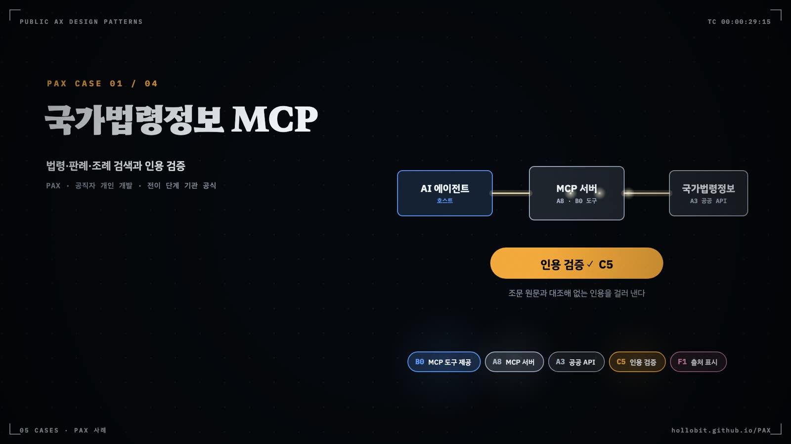

A 공통 서비스
모델·데이터·문서 형식·도구 인터페이스처럼 업무 부품이 딛고 서는 기반을 다룬다. 공통 서비스는 한 번 만들어 여럿이 나눠 쓸 때 제값을 한다.
- A 계층 19개 항목을 네 묶음으로 나눠 각자의 자리를 안다
- 환경 조건으로 모델 서빙 변형(A2.0~A2.6)을 고른다
- 공통 서비스를 새로 만들기 전에 범정부 Provider부터 찾는 순서를 익힌다
- PAX 564건에서 A 계층이 어떻게 쓰였는지 읽는다
세 부서가 같은 모델을 세 번 계약할 때
모델 호출에 한 달 얼마를 쓰는가. 이 물음에 한 숫자로 답하지 못하는 기관이라면 사정은 대개 이렇다. 민원 부서는 상담 챗봇을, 기획 부서는 보고서 초안 도구를, 총무 부서는 회의록 요약기를 거의 같은 시기에 만들었다. 세 과제가 상용 모델 API 키를 따로 받았고, 같은 규정집을 각자의 벡터DB에 넣었다. 공급사가 요금제를 바꾸거나 서비스가 하루 멈추면 셋이 한꺼번에 흔들린다.
카탈로그는 이 상태를 X3부서마다 챗봇이라 부르고, 빠진 부품으로 모델 서빙 계층과 공공 API 제공자를 지목한다. 둘 다 A 계층, 곧 공통 서비스(Platform Services)에 속한다. A 부품은 업무 컴포넌트가 딛는 기반이다. B 주 부품은 과제마다 하나지만 A 부품은 여러 개가 붙는다. 이 부품들은 기관이나 범정부 수준에 한 번 두고 여러 과제가 나눠 쓰는 Provider 방식일 때 제값을 한다.
GoF의 세 범주에 대면 A 계층은 생성(Creational) 패턴의 자리에 있다. 업무 부품이 쓸 모델·데이터·서식을 대신 만들어 건네준다. AX 성숙도로 보면 A 계층은 Ready 관문과 짝을 이룬다. 데이터 기준선(A1데이터 자산 서비스)과 계약된 데이터 결합(A4데이터 연계 서비스)이 갖춰져야 AI-Ready로 인정되고, A 부품만 있는 과제는 Ready를 넘지 못한다. 업무 흐름을 바꾸는 일은 B 부품이 하고, 공통 서비스는 그 부품이 올라설 땅을 고른다.
네 묶음으로 본 A 계층
A 계층의 19개 항목은 번호 순서로 읽으면 성격이 뒤섞이고, 하는 일로 묶으면 네 묶음이 된다(그림 7.1). 데이터 기반 묶음에서는 A1데이터 자산 서비스가 기관 안의 기록을 정제해 기준선을 만들고, A4데이터 연계 서비스가 다른 기관 데이터를 계약으로 결합하며, A6지식그래프 서비스가 규정과 개념 사이의 관계를 명시한다.

모델 서빙 묶음의 중심은 A2다. v0.7에서 A2는 모델 게이트웨이에서 모델 서빙 계층으로 이름을 넓혔고(R13), 그 아래에 일곱 변형을 둔다. 상용 API, 주권형 온프레미스, 튜닝형, 내부망 프록시 같은 LLM 변형에 더해 비LLM 학습 모델(A2.5), 벤더 블랙박스(A2.6), 모델 미상(A2.0)이 들어왔다. 현장 기기에서 추론하는 A5엣지 추론 런타임도 모델이 도는 자리라 이 묶음에 둔다.
셋째 묶음은 Provider와 제작 환경이다. A3공공 API 제공자는 범정부 AI 공통기반, 공공데이터포털, 공공 깃랩처럼 정부가 운영하는 기반을 가져다 쓰는 자리이고, A7자체 제작 환경은 기관 인력이 AI 코딩 도구로 직접 만드는 자리다. A9업무 규범 스킬은 보고서 구조·문체·검증 절차를 모델 중립 스킬로 묶어 어떤 코딩 에이전트에서든 다시 쓰게 한다.
남은 묶음은 어댑터다. A8MCP 서버·호스트가 공공 API와 업무 시스템을 에이전트가 부르는 도구로 감싸고, A10문서 형식 어댑터가 HWP·HWPX·엑셀을 읽고 쓴다. A12접근성·모달리티 어댑터는 A10과 대칭인 사람 쪽 어댑터로, 음성·다국어·쉬운 언어를 맡는다. A11액추에이션·현장 통지 어댑터는 판정을 경광등이나 알림톡으로 내보내며, R14에 따라 물리 설비를 움직이는 A11a(P2a)와 소프트웨어 통지를 보내는 A11b로 나뉜다.
Gulli(2025) 10장은 기존 서비스를 MCP 도구로 감싸면 다시 짜지 않고 재사용하게 된다고 하면서, 돌려주는 데이터가 에이전트가 읽을 형태여야 한다는 단서를 붙인다. 공공 문서에서 그 형태를 만드는 부품이 A10이다. 16장의 자원 인지 최적화는 쉬운 질의를 값싼 모델로 보내고 장애 때 대체 모델로 넘기는 방식이라 A2의 라우팅·폴백에 해당한다. 부록 A의 프롬프트 기법은 A9와, 부록 G의 코딩 에이전트는 A7과 겹친다. 데이터 기반(A1·A4), 범정부 Provider(A3), 문서 형식 어댑터(A10)에 대응하는 장은 없으며, 이 자리를 공공 카탈로그가 채웠다.
모델 서빙 변형을 고르는 순서
A 계층에서 판단이 가장 자주 갈리는 곳은 A2다. 어떤 모델을 쓰느냐보다 모델이 어디서 어떻게 서빙되느냐가 조립을 바꾸기 때문이다. 같은 지식 접지 상담이라도 인터넷망에서 공개 문서를 다루면 상용 API로 충분하지만, 행정망에서 민감 등급 문서를 다루면 내부망 프록시 없이는 조립이 성립하지 않는다. 카탈로그 §5의 데이터 등급 축이 이것을 못 박는다. E5가 S 이상이면 해외 상용 API를 직접 부를 수 없다.
그림 7.2의 질문 가운데 무게가 가장 큰 것은 첫 질문이다. 런타임에 모델을 한 번도 부르지 않는 도구라면 A2는 필요 없고, 그 도구는 B0 결정적 도구다. 모델을 부른다면 먼저 모델의 정체를 묻고(자체 학습인가, 벤더 내장인가, 아직 미상인가, 재학습했는가), 다음으로 망과 등급을 묻는다. 튜닝형(A2.3)은 흐름도 한가운데 있지만 진행 경로(§7.2)에서는 열한 단계 중 마지막이다. 평가 세트로 잰 격차가 접지와 스킬로도 메워지지 않을 때 가는 길이다.
변형이 무엇이든 A2를 한 겹 두는 이유는 같다. 업무 부품이 벤더 API를 직접 부르면 대체 모델을 끼울 자리가 없다. 카탈로그가 서빙 계층을 C7폴백 스위치의 전제로 보는 까닭이다. C7이 없으면 Native 관문을 넘지 못한다. 폐쇄망 과제라면 로컬 대체 모델(A2.2)이 사실상 유일한 자동 전환 경로다.
이웃 계층과의 경계
A 계층은 네 이웃과 맞닿아 있다(그림 7.3). 위로는 B 계층이 A에 의존한다. 주 부품은 하나지만 A 부품은 여럿이고, 여러 과제가 같은 Provider를 나눠 쓸수록 조립이 가벼워진다. 경계가 헷갈리는 곳은 자체 제작 환경이다. A7자체 제작 환경은 도구를 만드는 자리이고, 그렇게 만든 규칙 기반 도구는 B 계층의 B0결정적 도구다. MCP 서버 하나만 공개한 사례도 같은 식으로 읽는다. 서버 자체는 B0(MCP 도구 제공 변형)이고, 도구 인터페이스로서 A8MCP 서버·호스트를 함께 태그한다.
옆으로는 S 계층과 자리를 나눠 쓴다. S1AI 게이트웨이·단일 진입점은 A2와 같은 자리에 있다. A2가 모델 교체·라우팅·캐싱을 맡는다면 S1은 같은 진입점에서 인증·요청 상한·감사 기록·비용 상한을 건다. 부서별 API 키로 상용 모델을 직접 부르는 구조는 A2의 부재이면서 S1의 부재다. 반대편에는 E 환경 조건이 있다. E는 조립도의 전제이고 부품 목록에는 오르지 않는다. 온프레미스는 E1·E2의 값이고, 그 값을 채우는 부품이 A2.2주권형 온프레미스다. MCP는 부품(A8)이면서 실행 형태 조건(E3)이기도 하다. 아래로는 C 운영 부품이 A에 꽂힌다. 폴백은 모델 서빙 계층에 대체 모델을 등록하는 방식으로 붙고, C9평가 세트·회귀시험은 데이터 자산에서 정답을 얻는다.
계층 안에서 고르기
표 7.1에서는 한 과제에 여러 줄이 걸리는 것이 정상이다.
| ID | 이름 | 한 줄 의도 | 쓰는 때 |
|---|---|---|---|
| A1 | A1데이터 자산 서비스 | 흩어진 기록을 정제·라벨링해 기준선으로 낸다 | 학습 데이터, 접지 코퍼스, 평가 세트의 정답 출처가 필요할 때 |
| A2 | A2모델 서빙 계층 | 업무 부품과 모델 사이에 한 겹을 둔다 | 런타임에 모델을 한 번이라도 부를 때 |
| A2.0 | A2.0모델 미상 | LLM은 쓰지만 모델이 정해지지 않은 자리 | 모델명이 기재되지 않았거나 BYO 배포일 때 |
| A2.1 | A2.1상용 API 호출 | 상용 모델을 서빙 계층 너머로 부른다 | 인터넷망·공개 등급이고 빠른 성능 확인이 필요할 때 |
| A2.2 | A2.2주권형 온프레미스 | 오픈웨이트 모델을 기관 안에서 돌린다 | 폐쇄망이거나 문서가 밖으로 나가면 안 될 때 |
| A2.3 | A2.3튜닝형 | 업무에 맞춰 재학습한 모델을 서빙한다 | 평가 세트로 잰 격차가 접지·스킬 뒤에도 남을 때 |
| A2.4 | A2.4내부망 프록시 | 행정망에서 상용 모델을 중계로 부른다 | 민감 등급 데이터에 상용 모델이 필요할 때 |
| A2.5 | A2.5비LLM 학습 모델 | 자체 학습한 예측·비전 모델을 서빙한다 | 예측·탐지 모델에 재학습과 버전 롤백이 필요할 때 |
| A2.6 | A2.6벤더 블랙박스 | 바꿀 수 없는 내장 모델을 계약과 실측으로 통제한다 | 벤더 제품의 AI 기능을 쓸 때 |
| A3 | A3공공 API 제공자 | 범정부 모델·데이터·개발 도구를 소비한다 | 무엇이든 새로 만들기 전에 |
| A4 | A4데이터 연계 서비스 | 타 기관 데이터를 계약과 키 매핑으로 결합한다 | 한 기관 데이터로는 근거가 모자랄 때 |
| A5 | A5엣지 추론 런타임 | 현장 기기에서 경량 모델로 추론한다 | 통신이 불안하거나 영상을 반출할 수 없을 때 |
| A6 | A6지식그래프 서비스 | 규정·개념의 관계를 온톨로지로 명시한다 | 상위·예외·선후 관계가 답을 좌우할 때 |
| A7 | A7자체 제작 환경 | 기관 인력이 AI 코딩으로 직접 만들고 고친다 | 소규모 도구를 용역 없이 빠르게 만들 때 |
| A8 | A8MCP 서버·호스트 | 공공 API·업무 시스템을 에이전트 도구로 감싼다 | 에이전트가 시스템을 도구로 불러야 할 때 |
| A9 | A9업무 규범 스킬 | 서식·문체·검증 절차를 모델 중립 스킬로 묶는다 | 산출물 형식이 정해져 있고 품질이 들쭉날쭉할 때 |
| A10 | A10문서 형식 어댑터 | HWP·HWPX·엑셀을 읽고 쓴다 | 입력이나 산출물이 공공 문서 서식일 때 |
| A11 | A11액추에이션·현장 통지 어댑터 | 판정을 설비와 통지 채널로 내보낸다 | 감지 결과를 현장이나 담당자에게 즉시 전할 때 |
| A12 | A12접근성·모달리티 어댑터 | 음성·다국어·쉬운 언어로 바꿔 전한다 | 고령자·장애인·외국인 이용을 보장해야 할 때 |
PAX 사례에서 본 A 계층
A 부품이 하나도 없는 PAX 사례는 564건 중 22건뿐이다. 분포는 한쪽으로 크게 기운다(그림 7.4). A7자체 제작 환경이 320건(57%)으로 가장 많고, 공공 API 제공자 156건, 문서 형식 어댑터 136건, 데이터 자산 115건, MCP 서버·호스트 95건 순이다. A7을 가진 사례 가운데 244건은 주 부품이 B0이다. 공직자가 AI 코딩으로 만든 규칙 기반 도구가 PAX의 저변이라는 뜻이다.
모델 서빙 변형을 하나라도 가진 사례는 153건(27%)이다. 상용 API(A2.1)가 88건으로 가장 많은데, 그중 폴백 스위치를 함께 태깅한 사례는 9건뿐이다. 내부망 프록시(A2.4)는 4건이다. 광진구의 AI 도구 6종 전 직원 투입, 병무청 워크메이트, 남양주 AI-Agent 베타, 범정부 내부망 AI 브라우저 사이드바 어시스턴트가 그 넷이다. 행정망 안에서 상용 모델을 쓰는 통로는 아직 드물다. 상용 API에 기대는 도구 대부분은 API가 멈췄을 때 넘어갈 곳이 없다.
핵심 정리
- A 공통 서비스는 업무 부품이 딛는 재료와 통로다. 과제마다 여러 개 붙고, Provider로 한 번 두고 나눌수록 가치가 크다.
- 19개 항목은 데이터 기반, 모델 서빙 계층, Provider·제작, 도구·형식 어댑터의 네 묶음으로 읽는다.
- A2 변형은 모델의 정체를 먼저 묻고 망과 데이터 등급을 나중에 물어 고른다. E5가 S 이상이면 상용 API 직접 호출은 성립하지 않는다.
- 모델 서빙 계층이 없으면 폴백 스위치(C7)를 끼울 자리가 없다. 튜닝형은 진행 경로의 마지막 단계다.
- S1은 A2와 같은 자리를 쓰고, E는 A 변형을 고르는 조건이다.
- PAX 564건 태깅에서 A7 자체 제작 환경이 320건으로 가장 많고, A2.1 상용 API 88건 중 폴백을 갖춘 사례는 9건이다.
패턴 프로필
요구어떻게 하면 흩어진 업무 기록을 과제마다 다시 가공하지 않고, 여러 AI 부품이 같은 정의로 기대는 기준선으로 만들 수 있는가?
흩어진 업무 기록을 정제·라벨링해 AI 부품이 바로 가져다 쓰는 기준선(데이터셋·라벨·데이터 사전)으로 제공한다.
공공AX 패턴 성좌의 디렉터리에서 A1 보기 ↗이 부품을 쓰는 PAX 사례 목록, 같이 쓰이는 부품, 3D 위치
01문제
업무 기록은 시스템·부서·형식마다 흩어져 있고 중복·결측·정의 불일치가 섞여 있다. 모델부터 고르고 데이터를 나중에 맞추면 실데이터 없이 시연만 되는 데모웨어(X6)가 되고, 과제마다 따로 정제하면 같은 가공을 기관 안에서 되풀이한다. PAX가 AI-Ready를 판정할 때 보는 요소(데이터·권한·책임·기준선)도 이 부품에서 갖춰진다.
맥락. 학습 모델(A2.5·B2), 지식 접지(B3)의 코퍼스, 평가 세트(C9)의 정답 출처가 필요한 과제라면 모두 이 부품을 쓴다. 서비스 유형 5a·9·10·11에서는 필수 기반이다. 비LLM 규칙 기반 대민 안내에서는 A2를 거치지 않고 결정론 조회의 대상이 된다(R21).
힘(forces) — 서로 당기는 요구
- 정제 품질 vs 구축 기간·라벨링 인력 비용
- 과제 전용 가공(빠름) vs 기관 공통 기준선(재사용)
- 데이터 활용 범위 vs 데이터 등급(E5) 보호
- 기준선 고정(재현성) vs 원천 갱신 반영
02해법
원천 기록을 수집→정제(중복·결측 처리)→라벨링→정의 문서화 순으로 가공하고, 결과를 정제 데이터셋·라벨·데이터 사전의 세 산출물로 고정해 제공한다. 'N건→M건 정제'처럼 정제 전후 규모와 기준을 기록하고, 변수·테이블·인터페이스 정의서로 소비 부품이 같은 정의를 쓰게 한다. 기준선은 버전으로 관리해 C9 평가 세트의 정답 출처와 C6 재학습의 입력으로 재사용한다. 데이터 경계는 부품별로 두고(DB per Service), 타 기관 데이터와의 결합은 A4로 분리한다.
변형
| 변형 | 설명 |
|---|---|
| 학습데이터 구축형 | 영상·이미지 등을 수집해 품질관리 단계(중복 제거·재라벨링·학습/검증/평가 분리)를 거쳐 학습 기준선으로 만든다. |
| RAG 코퍼스 정본화형 | 법령·규정 원문을 현행 시행본 기준으로 정본화하고 조문 구조·메타데이터를 부여해 색인한다. |
| 지표 표준화형 | 여러 자료원의 지표를 도메인별로 표준화하고 정의·단위·분모·결측·원본 링크를 메타데이터로 관리한다. |
| 자동 피처 파이프라인형 | 수집→정제→파생 변수 생성→자동 검증→담당자 승인을 주기 실행하고 승인만 사람에게 남긴다. |
03적용
- 기준선을 쓸 부품(B2·B3·C9 등)과 용도를 먼저 정하고, 데이터 등급(E5)과 배포망(E1)을 판정한다.
- 원천 목록을 만들고 중복·결측·정의 불일치를 파악해 정제 기준을 수치로 정한다('N건→M건' 기록).
- 라벨링 기준·인력·검수 절차를 정하고 학습/검증/평가 분할 규칙을 둔다.
- 변수·테이블·인터페이스 정의서(데이터 사전)를 작성해 소비 부품이 같은 정의를 쓰게 한다.
- 기준선을 버전으로 고정하고 C9 정답 출처와 C6 재학습 입력으로 연결한다.
- 기관 공통 기준선으로 쓸 수 있으면 레지스트리에 올려 다른 과제가 재사용하게 한다(§7.1 2단계).
점검 질문
- 정제 전후 규모와 정제 기준이 기록되어 있는가
- 데이터 사전(정의·단위·출처)이 있는가
- 기준선에 버전이 있고 평가용 분할이 학습용과 분리되어 있는가
- 데이터 등급(E5)에 맞는 가명·비식별 처리가 적용되었는가
환경 조건. E5 등급이 S 이상이면 가명·비식별 처리 뒤에 기준선을 만든다. E1이 폐쇄망이면 기준선도 망 안에 두고, 외부 모델(A2.1)로 넘길 때는 C5 비식별을 앞에 둔다.
A1 → A2.5 → B2 → C1 · A1 → C9 (정답 출처). 굵은 테두리가 이 패턴이다.04영향
얻는 것
- 모델 교체와 무관하게 남는 기관 자산
- C9·C6·B3가 같은 기준선을 재사용
- 데이터 사전이 기관 간 표준 확산의 단위가 됨
치르는 대가
- 구축 기간과 라벨링 인력 비용
- 원천 갱신에 따른 유지 비용
- 민감 등급 데이터의 관리 부담
이럴 때 쓴다
- 예측·추천기(B2)나 비전 모델(A2.5)을 학습·재학습할 때
- 지식 접지(B3)의 코퍼스를 구축할 때
- 평가 세트(C9)의 정답 출처가 필요할 때
- 서비스 유형 5a-agg·9·10·11처럼 A1이 필수인 조립
이럴 때는 쓰지 않는다
- 공공 API 응답을 가공 없이 조회만 할 때(A3)
- 정제·정의 없이 파일을 올려 바로 검색하는 경우(태그 대상 아님)
- 타 기관 데이터 결합이 핵심일 때는 A4를 함께 태그해 계약·키 매핑을 따로 드러낸다
05판정
식별 신호
| 헷갈리는 이웃 | 가르는 규칙 |
|---|---|
| A4데이터 연계 서비스 | 자기 기관 기록의 정제는 A1, 타 기관 데이터를 계약·표준 인터페이스로 결합하면 A4. 결합 후 정제까지 했으면 둘 다 태그한다. |
| A3공공 API 제공자 | 공공데이터포털 등 공공 API를 가공 없이 소비하면 A3. 받아 온 데이터를 정제·정의해 기준선으로 고정했으면 A1을 더한다. |
| A6지식그래프 서비스 | 개념·관계를 온톨로지로 명시해 질의 API로 내놓으면 A6. 표 형태 기준선은 A1. |
06관계
| 패턴 | 관계 |
|---|---|
| C9평가 세트·회귀시험 | 소비처 — 기준선이 평가 세트의 정답 출처 |
| A4데이터 연계 서비스 | 짝 — 자기 기관 정제(A1)와 타 기관 결합(A4) |
| B3지식 접지 상담 | 소비처 — 지식 접지의 코퍼스 |
| C6환류 파이프라인 | 선행 — 재학습 입력이 되는 기준선 |
| A2.5모델 서빙 · 비LLM 학습 모델 | 소비처 — 자체 학습 모델의 학습 데이터 |
빠지기 쉬운 함정. X6데모웨어
출처·문헌: 카탈로그 §6 A1 카드 · 카탈로그 §0 v0.3 판정표 A1·A4 · 카탈로그 §4.3 위치 매트릭스 · 카탈로그 §7.3 조립 템플릿 · 카탈로그 §8 축 교차표(DB per Service) · 카탈로그 §13 A1 · 분류기준 §1 A1, R7, R19, R21 · computer.org 데이터 증강 · Heiland 데이터 계층 · Microservice 패턴 DB per Service · GoF Builder
요구어떻게 하면 업무 부품을 고치지 않고도 모델을 바꿔 끼우고, 장애·비용·반출을 한 자리에서 통제할 수 있는가?
업무 부품이 모델을 직접 부르지 않고 서빙 계층을 거쳐 부르게 해 모델을 바꿔 끼우고 라우팅·캐싱·버전 고정·폴백을 한 자리에서 다룬다. A2.0~A2.6을 묶는 부모 항목이다.
공공AX 패턴 성좌의 디렉터리에서 A2 보기 ↗이 부품을 쓰는 PAX 사례 목록, 같이 쓰이는 부품, 3D 위치
01문제
업무 코드에 특정 모델 API가 박혀 있으면 모델 교체·장애 대응·비용 통제·민감정보 반출 통제를 걸 자리가 없다. 상용 API를 업무 코드에서 직접 부르면 C7 폴백을 끼울 자리부터 없다(X4). 또 v0.5까지 A2는 LLM 어휘만 있어 비LLM 자체 학습 모델·벤더 내장 모델·모델 미상 사례가 들어갈 곳이 없었고, 이 공백이 태깅 피드백으로 돌아왔다(R13).
맥락. 런타임에 모델(LLM·VLM·비전·ML)을 부르는 모든 B 부품. E2 모델 의존 값이 곧 어떤 하위 변형을 쓸지를 정하고, E1 배포망과 E5 데이터 등급이 허용 범위를 좁힌다. B0 결정적 도구처럼 런타임 AI가 없으면 해당하지 않는다.
힘(forces) — 서로 당기는 요구
- 모델 교체 가능성 vs 추상화 계층을 운영하는 비용
- 모델 성능 vs 데이터 주권(E1·E5)
- 비용 통제(라우팅·캐싱·배칭) vs 지연
- 벤더 고유 기능 활용 vs 종속
02해법
업무 부품과 모델 사이에 서빙 계층을 두고 모든 호출을 이 층으로 보낸다. 계층은 모델 버전을 고정하고 사용량·지연 로그를 C4로 넘기며, 대체 모델을 함께 등록해 C7이 전환할 자리를 만든다. 지능형 모델 라우팅(경량 모델이 복잡도를 보고 큰 모델로 넘김)·프롬프트 캐싱·동적 배칭은 모두 이 계층이 있어야 걸리는 비용 통제다. 하위 변형은 모델이 어디서 도는가로 고른다. 기관 밖 상용 API면 A2.1(행정망·민감 등급이면 A2.4), 오픈웨이트를 기관 안에서 돌리면 A2.2, 재학습했으면 A2.3, 비LLM 자체 학습이면 A2.5, 장비·상용 제품에 내장돼 있으면 A2.6, 알 수 없거나 이용자가 가져오면 A2.0이다.
변형
| 변형 | 설명 |
|---|---|
| A2.0모델 서빙 · 모델 미상모델 미상 | LLM 사용은 확인되지만 모델명이 없거나 이용자 구독 모델(BYO)에 얹혀 있다. v0.7에서 추가했다. |
| A2.1모델 서빙 · 상용 API 호출상용 API 호출 | GPT·Gemini·Claude·HyperCLOVA X·Upstage 등 상용 모델 API를 부른다. |
| A2.2모델 서빙 · 주권형 온프레미스주권형 온프레미스 | 오픈웨이트 모델을 자체 서버·폐쇄망·로컬 PC에서 돌린다(Ollama·vLLM). |
| A2.3모델 서빙 · 튜닝형튜닝형 | 파인튜닝·LoRA·재학습으로 만든 자체 모델이다. 진행 경로의 마지막 단계에 놓인다. |
| A2.4모델 서빙 · 내부망 프록시내부망 프록시 | 행정망·내부망에서 상용 모델을 기관 게이트웨이·사설 엔드포인트·범정부 공통기반을 거쳐 부른다. |
| A2.5모델 서빙 · 비LLM 학습 모델비LLM 학습 모델 | XGBoost·LightGBM·YOLO·U-Net 등 기관이 직접 학습한 모델을 서빙한다. |
| A2.6모델 서빙 · 벤더 블랙박스벤더 블랙박스 | 장비·상용 제품에 내장돼 있어 기관이 모델을 보지도 바꾸지도 못한다. |
03적용
- E1 배포망·E2 모델 의존·E5 데이터 등급을 먼저 기록해 허용되는 변형을 좁힌다(E1 폐쇄망인데 상용 API면 조립 오류).
- 업무 코드가 모델 SDK를 직접 부르지 않도록 서빙 계층 인터페이스를 정하고 주 경로 변형을 고른다.
- 모델·프롬프트·설정 조합을 릴리스처럼 버전으로 고정하고 C9 평가 세트로 교체 전후를 비교한다.
- 대체 모델을 같은 계층에 등록해 C7 전환 경로를 만든다.
- 사용량·지연·모델 버전 로그를 C4로 보내고, 비용이 문제면 라우팅·캐싱·배칭을 켠다.
점검 질문
- 업무 코드가 특정 모델 API를 직접 호출하지 않는가
- 모델 버전이 고정·기록되는가
- 대체 모델 또는 대체 경로가 계층에 등록되어 있는가
- 선택한 변형이 E1·E5 조건과 모순되지 않는가
환경 조건. E1 폐쇄망이면 A2.2·A2.4·A2.5만 가능하고 C7 경로도 '수동 전환·로컬 모델'로 제한된다. E5가 S 이상이면 해외 상용 API 직접 호출은 A2.4 없이는 불가하다. E2가 모델 중립(BYO)이면 A9 스킬로 규범을 모델 밖에 두어 모델 교체 가능성 자체를 C7로 삼는다.
B3 → A2.4 → (상용 모델) · A2 → C4 (사용량·버전) · A2 → C7 → A2.2 (장애 시). 굵은 테두리가 이 패턴이다.04영향
얻는 것
- 모델 교체와 C7 폴백이 가능해짐
- 라우팅·캐싱으로 비용 통제
- 버전 고정으로 회귀시험 가능
- 민감정보 반출 통제 지점 확보
치르는 대가
- 추가 계층의 운영·유지 비용
- 변형별 인프라(GPU·프록시) 비용
- 계층 자체가 단일 장애점이 될 수 있음
이럴 때 쓴다
- 업무 부품이 런타임에 모델을 한 번이라도 부를 때
- 상용 API에 의존해 C7 폴백을 끼워야 할 때(E2 해외 상용 API)
- 호출당 비용·지연을 관리해야 할 때(라우팅·캐싱)
- 모델 업데이트 후 품질 회귀를 막아야 할 때(버전 고정 + C9)
이럴 때는 쓰지 않는다
- B0 결정적 도구처럼 런타임에 모델을 부르지 않을 때
- 모델이 아니라 도구·데이터를 감싸는 층이 필요할 때(A8·A3)
05판정
식별 신호
| 헷갈리는 이웃 | 가르는 규칙 |
|---|---|
| S1AI 게이트웨이·단일 진입점 | S1은 인증·요청 상한·비용 상한을 거는 보안 진입점이고, A2는 모델을 바꿔 끼우는 자리다. 둘은 같은 위치에 겹치기도 한다(S1 의존 'A2 게이트웨이(같은 자리)'). S1은 보안 통제 서술이 있을 때만 더한다. |
| A3공공 API 제공자 | 범정부 AI 공통기반처럼 공공이 운영하는 모델을 소비하면 A3를 함께 태그하고, 호출 방식에 따라 A2.4 등 변형을 붙인다. |
| A8MCP 서버·호스트 | A8은 도구·데이터를 에이전트가 부르도록 감싸는 층이고, A2는 모델을 감싸는 층이다. |
06관계
| 패턴 | 관계 |
|---|---|
| C7폴백 스위치 | 끼울 자리 — 대체 모델을 이 계층에 등록 |
| C4감사 로그·지표 | 기록처 — 사용량·지연·버전 |
| C9평가 세트·회귀시험 | 짝 — 버전 고정과 회귀시험 |
| S1AI 게이트웨이·단일 진입점 | 같은 자리 — 보안 진입점 |
| A3공공 API 제공자 | Provider — 범정부 공통기반 모델 소비 |
| A9업무 규범 스킬 | 대안 — BYO 환경에서 규범을 모델 밖으로 |
빠지기 쉬운 함정. X4단일 모델 인질 X3부서마다 챗봇
알려진 사용례
- PAX 온나라 sAIde 행정망에서 로컬 Ollama로 요약해 문서가 PC 밖으로 나가지 않게 함(§9)
출처·문헌: 카탈로그 §6 A2 카드 · 카탈로그 §0 v0.3 판정표 A2, v0.6 A2.5 행, v0.7 R13 행 · 카탈로그 §4.3 위치 매트릭스 · 카탈로그 §5 조건별 필수 의존 부품 매트릭스 · 카탈로그 §7.5 실패 양상 표 · 분류기준 §1 A2.1~A2.4, R4, R13 · Heiland '업무 로직과 ML 모델 분리' · InfoQ 모델 라우팅·프롬프트 캐싱·동적 배칭 · Microservice 패턴 API Gateway·Blue-Green · GoF Strategy
요구어떻게 하면 어떤 모델이 도는지 모르는 AI 도구를, 추정으로 채우지 않고 정직하게 기록하면서도 안전하게 쓰게 할 수 있는가?
LLM 사용은 확인되나 모델명·배포 위치가 기재되지 않았거나 이용자가 자기 구독 모델을 가져오는(BYO) 경우의 자리다. v0.7 문서 개정 때 추가되었고 태깅 스키마에는 아직 반영되지 않았다.
공공AX 패턴 성좌의 디렉터리에서 A2.0 보기 ↗이 부품을 쓰는 PAX 사례 목록, 같이 쓰이는 부품, 3D 위치
01문제
공개 자료가 '생성형 AI 활용'만 쓰고 모델명을 밝히지 않거나, 스킬·도구가 이용자의 코딩 에이전트 구독에 얹혀 모델이 고정되지 않는 사례가 많다. 이들을 A2.1이나 A2.2로 추정해 넣으면 'E1 폐쇄망인데 상용 API' 같은 조건-의존 검증이 거짓 경고나 거짓 통과를 낸다. R8에서 model_dependency에 'LLM(모델 미상)'을 넣었으므로 A2 쪽에도 짝이 되는 자리가 필요했다(R13).
맥락. E2 model_dependency가 'LLM(모델 미상)' 또는 '모델 중립(BYO)'인 과제에 쓴다. PAX 564건에서 BYO는 90건이고, 그중 자체 제작 환경(A7)의 BYO 사례가 30건이다.
힘(forces) — 서로 당기는 요구
- 기록 정확성 vs 그럴듯한 변형으로 추정해 채우고 싶은 유혹
- 모델 중립(이식성) vs 폐쇄망·데이터 등급 적합성을 판정할 수 없음
- 도입 장벽 낮음(이용자 구독 재사용) vs 기관 차원의 비용·반출 통제 부재
02해법
모델을 추정하지 않고 A2.0으로 태그해 '미상'을 명시한다. BYO 설계라면 업무 규범을 A9 스킬로 모델 밖에 두어 어떤 모델에서도 같은 절차가 돌게 하고, 모델 교체 가능성 자체를 C7로 본다(§5 매트릭스 E2 BYO 행). 미기재라면 기관 공식 전이 전에 모델명·배포 위치·데이터 흐름을 확인해 A2.1~A2.6 중 하나로 확정하는 일을 남은 과제로 적어 둔다. 미상 상태에서는 E5가 S 이상인 데이터를 넣지 않는다는 조건을 사용 안내(F7)에 적는다.
변형
| 변형 | 설명 |
|---|---|
| BYO(모델 중립) | 스킬·플러그인·CLI 도구가 이용자의 코딩 에이전트 구독 모델에서 돈다. 모델 중립이 설계 의도. |
| 미기재 | LLM 사용은 확인되나 원문에 모델명·배포 위치가 없다. 의도한 설계라기보다 기록이 비어 있는 경우다. |
03적용
- 원문·설정 파일에서 모델명·호출 위치가 있는지 확인하고, 없으면 A2.0으로 기록한다.
- BYO 설계라면 허용 모델 조건(E1 배포망·E5 등급)을 README나 안내문에 명시한다.
- 업무 규범을 A9 스킬로 분리해 모델이 바뀌어도 같은 산출물이 나오게 한다.
- 기관 공식으로 전이하기 전에 모델을 확정해 A2.1~A2.6 중 하나로 재분류하고 C7 경로를 정한다.
점검 질문
- 모델 미상임이 조립도와 태그에 명시되어 있는가
- BYO라면 허용 데이터 등급이 이용자에게 안내되는가
- 전이 전 모델 확정 계획이 있는가
환경 조건. E2 = LLM(모델 미상) 또는 모델 중립(BYO). E1 폐쇄망·E5 S 이상과의 적합성은 판정 불가로 남는다. §5 매트릭스에서 E2 BYO는 A9 스킬 배포가 필수이며 MIT·Apache 라이선스 명시가 전이 조건이다.
A9 → B1 → A2.0 (이용자 구독 모델) · F7 (허용 등급 안내). 굵은 테두리가 이 패턴이다.04영향
얻는 것
- 조건-의존 검증의 오판을 막음
- BYO형은 모델 교체가 자유로워 이식성이 높음
치르는 대가
- 데이터 반출 여부를 판정할 수 없음
- 비용·버전을 기관이 통제하지 못함
- C7·C9 설계가 모델 확정 전까지 보류됨
이럴 때 쓴다
- 원문에서 LLM 사용은 확인되지만 모델명이 한 번도 나오지 않을 때
- 도구가 이용자 구독 모델(BYO)에 얹혀 배포될 때
이럴 때는 쓰지 않는다
- 모델명이 한 번이라도 기재되면 해당 변형(A2.1~A2.6)으로 태그
- 런타임에 모델을 부르지 않는 B0 도구
05판정
식별 신호
| 헷갈리는 이웃 | 가르는 규칙 |
|---|---|
| A2.1모델 서빙 · 상용 API 호출 | 상용 모델명(GPT·Gemini·Claude 등)이 원문에 나오면 A2.1. 추정으로 A2.1을 붙이지 않는다. |
| A2.6모델 서빙 · 벤더 블랙박스 | 벤더 제품이 모델을 감추고 있으면 A2.6(모델이 제품에 묶임), 이용자가 모델을 고르거나 기재가 없으면 A2.0. |
06관계
| 패턴 | 관계 |
|---|---|
| A9업무 규범 스킬 | 짝 — BYO 환경에서 규범을 모델 밖으로 빼는 부품 |
| A2.1모델 서빙 · 상용 API 호출 | 확정 후 이동처 — 상용 모델로 확인되면 |
| A7자체 제작 환경 | 선행 — BYO 구독으로 직접 만드는 제작 환경 |
| E2 | 기록 축 — model_dependency 값과 짝 |
의존. A9업무 규범 스킬
출처·문헌: 카탈로그 §0 v0.7 R13 행 · 카탈로그 §5 E2 및 조건별 필수 의존 부품 매트릭스(E2 BYO 행) · 카탈로그 §6 A7 카드(BYO 구독) · 분류기준 R8, R13 · PAX model_dependency 8분류 어휘
요구어떻게 하면 자체 인프라 없이 상용 모델의 성능을 쓰면서도, 장애·단가 변경·예고 없는 업데이트에 서비스 전체가 묶이지 않게 할 수 있는가?
GPT·Gemini·Claude·HyperCLOVA X·Upstage 등 상용 모델 API를 서빙 계층을 거쳐 호출해 자체 인프라 없이 최신 모델 성능을 쓴다.
공공AX 패턴 성좌의 디렉터리에서 A2.1 보기 ↗이 부품을 쓰는 PAX 사례 목록, 같이 쓰이는 부품, 3D 위치
01문제
GPU·모델 운영 없이 성능 높은 모델을 바로 쓰게 되므로 많은 도구가 이 변형을 택한다. PAX 564건에서 해외 상용 API에 의존하는 사례는 64건이고, 그중 61건에 C7 대체 경로가 없다. 그러나 업무 코드가 API 하나를 직접 부르면 장애·단가 변경·모델 업데이트에 서비스 전체가 묶이고(X4), 행정망 본문이 기관 밖으로 나간다. PAX 564건 평가에서 복원력이 미확인인 사례는 468건(83%)이다.
맥락. E2는 해외 상용 API(또는 국산 상용 모델 API), E1은 인터넷망·클라우드다. E5 등급이 O이거나 비식별 후 전송해도 되는 업무에 맞는다. 대민 상담(B3)·코파일럿(B1)·콘텐츠 생성(B7)에서 흔하다.
힘(forces) — 서로 당기는 요구
- 모델 성능·도입 속도 vs 데이터 반출·주권
- 종량 과금의 초기 저비용 vs 호출량 증가 시 비용 예측 어려움
- 벤더의 모델 개선 vs 예고 없는 품질 회귀
- 단일 API의 단순함 vs 장애 시 서비스 중단
02해법
업무 코드는 서빙 계층만 부르고, 서빙 계층이 상용 API를 호출한다. 행정망 본문이 나가는 경로 앞에는 C5 비식별 전처리를 두고, 대체 모델을 등록해 C7 폴백을 건다(§5 매트릭스 E2 해외 상용 API 행). 모델 버전을 고정하고 모델·프롬프트·설정 조합을 릴리스처럼 관리해 업데이트 전후를 C9로 비교한다. 비용이 문제면 라우팅·캐싱으로 큰 모델 호출을 줄인다. E5가 S 이상이면 이 변형 단독으로는 안 되고 A2.4 내부망 프록시를 거친다.
변형
| 변형 | 설명 |
|---|---|
| 해외 상용 API | GPT·Gemini·Claude 등이다. E2 값은 해외 상용 API. |
| 국산 상용 API | HyperCLOVA X·Upstage 등 국내 사업자 API. 망·등급 조건은 해외와 같이 따진다. |
| 구조화 호출 | function calling·JSON Schema로 출력 형식을 고정해 부른다. 판정은 규칙 엔진에 남긴다. |
03적용
- 전송될 데이터의 등급(E5)을 판정하고, S 이상이면 A2.4로 방향을 바꾼다.
- 서빙 계층을 거쳐 호출하도록 구성하고 업무 코드의 직접 호출을 없앤다.
- 외부 전송 전 C5 비식별 전처리를 넣는다.
- 모델 버전을 고정하고 C9 평가 세트로 업데이트 전후를 비교하는 절차를 둔다.
- 대체 모델·규칙 축소·수동 전환 중 하나 이상을 C7 경로로 등록하고 한 번 실행해 본다.
점검 질문
- 업무 코드가 상용 API를 직접 부르지 않는가
- 외부로 나가는 프롬프트에서 무엇이 걸러지는지 답할 수 있는가
- API 장애 시 대체 경로가 있는가
- 모델 버전과 호출당 비용·지연이 기록되는가
환경 조건. E2 값은 해외 상용 API다. 조건-의존 검증에서는 E1 폐쇄망인데 A2 변형이 상용 API면 오류, E2 해외 상용 API인데 C7이 없으면 경고(§12). E5 S 이상이면 A2.4 필수. 유형 12에서 A2.1을 쓰면 C7 부재 경고를 유지한다(R22).
B3 → C5 → A2.1 (상용 API) · A2.1 → C7 → A2.2 (장애 시). 굵은 테두리가 이 패턴이다.04영향
얻는 것
- 인프라 없이 최신 모델 성능
- 빠른 시범 구축
- 벤더의 지속적 개선
치르는 대가
- 데이터 반출 위험과 비식별 비용
- 단일 벤더 종속(X4)
- 예고 없는 모델 업데이트에 따른 회귀
- 호출량 증가 시 비용 폭주
이럴 때 쓴다
- 인터넷망·클라우드 환경이고 데이터 등급이 O이거나 비식별 후 전송 가능할 때
- 시범 구축 초기에 모델 성능을 빠르게 확인해야 할 때
- 자체 GPU·운영 인력이 없을 때
이럴 때는 쓰지 않는다
- E1이 폐쇄망이면 조립 오류(A2.2·A2.4로)
- E5가 S 이상인데 내부망 프록시가 없을 때(A2.4 필수)
- 상시 서비스인데 대체 경로를 둘 수 없을 때
05판정
식별 신호
| 헷갈리는 이웃 | 가르는 규칙 |
|---|---|
| A2.4모델 서빙 · 내부망 프록시 | 행정망·내부망에서 기관 게이트웨이·사설 엔드포인트·범정부 공통기반을 경유하면 A2.4. 인터넷으로 바로 부르면 A2.1. |
| A2.6모델 서빙 · 벤더 블랙박스 | 상용 제품 안에 모델이 숨어 있고 기관이 직접 호출하지 않으면 A2.6. 기관 코드가 API를 부르면 A2.1. |
| A2.0모델 서빙 · 모델 미상 | 모델명이 없으면 A2.1로 추정하지 않고 A2.0. |
06관계
| 패턴 | 관계 |
|---|---|
| C7폴백 스위치 | 필수 짝 — 상용 API 의존이면 폴백 필수 |
| C5가드레일 필터 | 선행 — 외부 전송 전 비식별 |
| A2.4모델 서빙 · 내부망 프록시 | 대안 — 행정망·민감 등급일 때 중계 경유 |
| C9평가 세트·회귀시험 | 짝 — 모델 업데이트 회귀시험 |
의존. A2모델 서빙 계층
빠지기 쉬운 함정. X4단일 모델 인질 X3부서마다 챗봇
출처·문헌: 카탈로그 §6 A2 카드(변형 ① 상용 API) · 카탈로그 §5 조건별 필수 의존 부품 매트릭스(E2 해외 상용 API 행) · 카탈로그 §7.1·§7.5 · 카탈로그 §11 X4 · 카탈로그 §12 조건-의존 검증 · 분류기준 §1 A2.1, R22 · Fowler Direct Prompting · InfoQ 모델 라우팅·캐싱 · Microservice 패턴 Circuit Breaker
요구어떻게 하면 행정망·폐쇄망의 민감 문서를 기관 밖으로 내보내지 않고도 생성형 모델로 처리할 수 있는가?
오픈웨이트 모델을 기관 서버·폐쇄망·로컬 PC 안에서 Ollama·vLLM 등으로 구동해 데이터를 기관 밖으로 내보내지 않고 추론한다.
공공AX 패턴 성좌의 디렉터리에서 A2.2 보기 ↗이 부품을 쓰는 PAX 사례 목록, 같이 쓰이는 부품, 3D 위치
01문제
행정망·폐쇄망 업무 문서와 민감자료는 외부 API로 보내지 못하므로 상용 모델을 쓸 길이 막힌다. PAX 564건 중 181건(약 3분의 1)은 네트워크 요구로 보면 로컬에서 완결되거나 폐쇄망에서 돈다. 문서가 PC 밖으로 나가면 안 된다는 조건도 이 변형으로 맞춘다(온나라 sAIde).
맥락. E1은 폐쇄망·행정망·로컬 PC, E2는 해외 오픈웨이트(로컬) 또는 국산 오픈웨이트, E5는 S 이상이다. 폐쇄망 B3·B6·B8, 유형 3(현장 폐쇄망 서버 추론), 유형 12 개발 코파일럿은 이 변형을 기본으로 쓴다.
힘(forces) — 서로 당기는 요구
- 데이터 주권 vs 상용 최신 모델 대비 성능
- GPU·서버 고정비 vs 종량 과금
- 모델 운영·갱신 역량 vs 외부 의존 제거
- 저사양 장비 구동 vs 모델 크기
02해법
오픈웨이트 모델을 기관 안에 설치하고 서빙 계층(Ollama·vLLM·LM Studio 등)으로 업무 부품에 노출한다. 임베딩 모델도 로컬로 두어 B3 검색까지 망 안에서 끝낸다(§5 E1 폐쇄망 행 '로컬 임베딩'). 모델 선정은 C9 평가 세트로 상용·온프레미스 후보를 같은 조건에서 비교해 정한다. 폐쇄망에서 C7 경로는 수동 전환·다른 로컬 모델로 제한되므로 둘 이상의 로컬 모델이나 수동 절차를 미리 둔다. 모델·패키지 반입은 S11 인제스천 검증을 거친다.
변형
| 변형 | 설명 |
|---|---|
| 기관 서버형 | vLLM 등으로 기관 GPU 서버에서 다수 이용자에게 서빙한다. |
| 로컬 PC·워크스테이션형 | Ollama·LM Studio로 개인 PC나 단일 워크스테이션에서 돌린다(온나라 sAIde). |
| 범정부 공통기반 내부망 설치형 | 국산 독자모델·오픈웨이트를 공통기반 내부망에 직접 설치해 여러 부처에 제공한다(PAX 행정안전부 사례). |
03적용
- E1·E5 조건과 예상 이용자 수로 서버형·로컬 PC형을 고른다.
- C9 평가 세트로 상용·오픈웨이트 후보를 같은 조건에서 비교해 모델을 고른다.
- 모델·패키지를 S11 검증을 거쳐 반입하고 임베딩까지 로컬로 구성한다.
- 서빙 계층으로 업무 부품에 노출하고 모델 버전을 고정한다.
- 폐쇄망 C7 경로(다른 로컬 모델 또는 수동 전환)를 정해 둔다.
점검 질문
- 추론·임베딩 어디에서도 데이터가 망 밖으로 나가지 않는가
- 모델 선정 근거(평가 세트 비교)가 남아 있는가
- 반입한 모델·패키지의 무결성 검사 기록이 있는가
- 대체 로컬 모델 또는 수동 전환 절차가 있는가
환경 조건. E1이 폐쇄망이면 B3에는 'A2 주권형 또는 내부망 프록시 + 로컬 임베딩', B6에는 'A8 로컬 MCP 호스트 + A2 로컬 모델', B8에는 'A2 로컬 모델'이 필수다. C7 경로는 수동 전환과 로컬 모델로 한정된다(§5). 유형 3은 A5·A2.2·A2.5 중 하나를(R10), 유형 12는 A2.1 또는 A2.2를 쓴다(R22).
B8 → A2.2 (로컬 Ollama) → A10 → D8.2 · A8 → B6 → A2.2 (폐쇄망 로컬 호스트). 굵은 테두리가 이 패턴이다.04영향
얻는 것
- 데이터가 기관 밖으로 나가지 않음
- 호출 비용이 고정비로 바뀜
- 폐쇄망에서도 LLM 사용 가능
- C7의 대체 경로 후보
치르는 대가
- GPU·서버 비용과 운영 부담
- 상용 최신 모델 대비 성능 격차
- 모델 갱신·보안 패치를 기관이 직접 챙김
이럴 때 쓴다
- E1이 폐쇄망·행정망이거나 문서가 PC 밖으로 나가면 안 될 때
- E5가 S 이상인데 내부망 프록시(A2.4)를 쓸 수 없을 때
- 현장 폐쇄망 서버에서 추론해야 하는 유형 3
- C7의 대체 경로로 로컬 모델을 둘 때
이럴 때는 쓰지 않는다
- 추론 인프라·운영 인력을 확보할 수 없을 때
- 현장 기기 자체에서 돌아야 하면 A5(엣지 런타임)
- 모델을 재학습했으면 A2.3
05판정
식별 신호
| 헷갈리는 이웃 | 가르는 규칙 |
|---|---|
| A2.3모델 서빙 · 튜닝형 | 로컬 모델을 재학습·LoRA 했으면 A2.3, 가중치를 그대로 추론만 하면 A2.2. |
| A5엣지 추론 런타임 | 현장 기기(단말·NPU·카메라)에서 경량 모델을 돌리면 A5, 기관 서버·PC에서 돌리면 A2.2. |
| A2.4모델 서빙 · 내부망 프록시 | 내부망에서 상용 모델을 중계하면 A2.4, 오픈웨이트를 직접 설치하면 A2.2. |
06관계
| 패턴 | 관계 |
|---|---|
| C7폴백 스위치 | 대체 경로 — 상용 API 장애 시 전환 대상 |
| A8MCP 서버·호스트 | 짝 — 폐쇄망 로컬 MCP 호스트 |
| S11인제스천·공급망 검증 | 선행 — 폐쇄망 반입 검증 |
| A5엣지 추론 런타임 | 대안 — 현장 기기 추론 |
| C9평가 세트·회귀시험 | 선행 — 모델 선정 근거 |
의존. A2모델 서빙 계층
빠지기 쉬운 함정. X4단일 모델 인질
알려진 사용례
- PAX 58420e002644542c 행정안전부, 엑사원·Gemma4를 범정부 공통기반 내부망에 설치해 약 8천 명에 롤아웃(§13 A2.2)
- PAX 01963ce2b093182c 양산시, 저사양 온프레미스 로컬 LLM으로 보고서 작성 전 과정을 폐쇄망 안에서 처리(§13 A2.2)
- PAX 온나라 sAIde 온나라 사이드패널 + 로컬 Ollama 요약(§9)
출처·문헌: 카탈로그 §6 A2 카드(변형 ② 주권형 온프레미스) · 카탈로그 §0 v0.3 판정표 A2 · 카탈로그 §5 조건별 필수 의존 부품 매트릭스(E1 행) · 카탈로그 §9 온나라 sAIde · 카탈로그 §13 A2.2·C9 · 분류기준 §1 A2.2, R10, R22 · Heiland '업무 로직과 ML 모델 분리' · GoF Strategy
요구어떻게 하면 기관 고유의 용어·문체·판정 기준을 모델에 익히되, 튜닝이 효과를 입증할 수 없는 지름길이 되지 않게 할 수 있는가?
파인튜닝·LoRA·재학습으로 기관 업무에 맞춘 자체 모델을 서빙한다. 평가·접지·스킬로 풀리지 않을 때 가는 진행 경로의 마지막 단계다.
공공AX 패턴 성좌의 디렉터리에서 A2.3 보기 ↗이 부품을 쓰는 PAX 사례 목록, 같이 쓰이는 부품, 3D 위치
01문제
기관 고유의 용어·문체·판정 기준이 범용 모델과 달라 프롬프트와 검색만으로 목표 품질에 닿지 않는 경우가 있다. 그러나 가장 흔한 실패는 순서를 건너뛰는 것이다. 검색으로 풀릴 문제를 파인튜닝으로 풀고, 평가 세트 없이 튜닝 효과를 주장한다(X10).
맥락. C9 평가 세트, B3 지식 접지, A9 규범 스킬을 거친 뒤에도 목표에 못 미친다는 기록이 있는 과제에 쓴다. 학습 데이터 기준선(A1)과 학습 인프라가 있어야 한다.
힘(forces) — 서로 당기는 요구
- 업무 적합도 향상 vs 학습 데이터·GPU 비용
- 가중치에 지식 고정 vs 규정 개정 시 재학습 부담
- 자체 모델 소유 vs 모델 버전·재학습 운영 책임
02해법
§7.2 진행 경로의 마지막(11단계)에 둔다. 먼저 C9로 기준 성능을 재고, B3 접지와 A9 스킬로 개선한 뒤에도 남는 격차를 튜닝 목표로 정한다. A1 기준선에서 학습 데이터를 만들고 학습/검증/평가를 분리한다. 튜닝한 모델은 버전으로 관리해 이전 안정판으로 되돌릴 수 있게 하고(C7 변형), 재학습 주기는 C6로 연결한다. 갱신이 잦은 규정·기준은 가중치에 넣지 않고 A9·B3로 주입한다.
변형
| 변형 | 설명 |
|---|---|
| LoRA·경량 튜닝 | 기반 모델 가중치는 그대로 두고 어댑터만 학습한다. |
| 전체 파인튜닝·재학습 | 기관 데이터로 모델 가중치를 다시 학습한다. |
| 국산 파운데이션 + 접지 | 국산 독자 파운데이션 모델에 RAG를 결합해 쓴다(PAX 법제처 사례, A2.3/A1 조합). |
03적용
- C9 평가 세트로 기준 모델의 성능을 기록한다.
- B3 접지·A9 스킬로 개선하고 남은 격차를 튜닝 목표 수치로 정한다.
- A1 기준선에서 학습 데이터를 만들고 학습/검증/평가 분할을 고정한다.
- 튜닝 후 같은 C9로 전후를 비교하고 기준을 넘는 버전만 배포한다.
- 이전 안정판 복귀 경로와 재학습 주기(C6)를 정한다.
점검 질문
- 튜닝 전 B3·A9로 시도한 기록이 있는가
- 튜닝 전후를 같은 평가 세트로 비교했는가
- 이전 모델 버전으로 되돌릴 수 있는가
- 재학습 주기와 트리거가 정해져 있는가
환경 조건. E1 폐쇄망에서도 가능하나 학습 인프라와 S11 반입 검증이 필요하다. E5 등급이 높은 학습 데이터는 C5 비식별 후 사용한다.
A1 → A2.3 → B1 → C1 · C9 → A2.3 (튜닝 전후 비교) · C6 → A2.3 (재학습). 굵은 테두리가 이 패턴이다.04영향
얻는 것
- 기관 고유 업무에 맞춘 성능
- 소형 모델로 폐쇄망 성능 확보
- 자체 모델 소유
치르는 대가
- 학습 데이터·GPU 비용
- 규정 개정마다 재학습 부담
- 모델 버전·회귀 관리 책임
- 평가 없이 쓰면 효과를 입증할 수 없음
이럴 때 쓴다
- C9로 잰 격차가 B3·A9 개선 뒤에도 남을 때
- 문체·용어·출력 형식이 기관 고유해 프롬프트로 고정되지 않을 때
- 폐쇄망에서 소형 모델로 특정 업무 성능을 끌어올려야 할 때
이럴 때는 쓰지 않는다
- 평가 세트가 없을 때(X10)
- 검색·접지로 풀릴 지식 문제일 때(파인튜닝 대신 지식 가이드를 In-Context로 주입, A9)
- 규정이 자주 개정돼 재학습 주기를 감당할 수 없을 때
05판정
식별 신호
| 헷갈리는 이웃 | 가르는 규칙 |
|---|---|
| A2.5모델 서빙 · 비LLM 학습 모델 | LLM·파운데이션 모델을 튜닝했으면 A2.3, XGBoost·YOLO·U-Net처럼 비LLM 모델을 기관이 직접 학습했으면 A2.5(v0.6 이후). v0.5 태깅에서는 비LLM 자체 학습 모델도 A2.3에 들어갔다. |
| A9업무 규범 스킬 | 규범·지식을 가중치에 넣으면 A2.3, 문서·스킬로 컨텍스트에 주입하면 A9. |
| A2.2모델 서빙 · 주권형 온프레미스 | 로컬 오픈웨이트를 그대로 추론만 하면 A2.2. |
06관계
| 패턴 | 관계 |
|---|---|
| C9평가 세트·회귀시험 | 선행 — 평가 없이 튜닝하지 않음 |
| B3지식 접지 상담 | 선행 — 접지로 풀리는지 먼저 확인 |
| A9업무 규범 스킬 | 대안 — 지식을 가중치 대신 컨텍스트로 |
| C6환류 파이프라인 | 짝 — 재학습 주기 |
| A2.5모델 서빙 · 비LLM 학습 모델 | 경계 — 비LLM 자체 학습 모델 |
의존. A2모델 서빙 계층 A1데이터 자산 서비스 C9평가 세트·회귀시험
빠지기 쉬운 함정. X10평가 없는 RAG, RAG 없는 튜닝
알려진 사용례
- PAX e2f85975979aa487 법제처, 국산 독자 파운데이션 모델 + RAG로 판례·법령·자치법규 30만여 건 접지(§13 A2.3/A1)
출처·문헌: 카탈로그 §6 A2 카드(변형 ③ 튜닝형) · 카탈로그 §7.2 진행 경로 11단계 · 카탈로그 §11 X10 · 카탈로그 §13 A2.3·A9 · 분류기준 §1 A2.3, R4, R13 · Fowler Fine Tuning(진행 경로 마지막) · Heiland 배포 범주
요구어떻게 하면 인터넷에 직접 나갈 수 없는 행정망 업무에서, 민감 본문을 통제한 채 상용 모델의 성능을 쓸 수 있는가?
행정망·내부망에서 상용 모델을 쓰도록 호출을 기관 게이트웨이·사설 엔드포인트·범정부 공통기반으로 중계해 반출과 접근을 통제한다.
공공AX 패턴 성좌의 디렉터리에서 A2.4 보기 ↗이 부품을 쓰는 PAX 사례 목록, 같이 쓰이는 부품, 3D 위치
01문제
행정망 업무에서 상용 모델 성능이 필요하지만 업무 PC가 인터넷에 직접 나갈 수 없고, 민감 등급 본문을 그대로 보낼 수도 없다. 로컬 모델(A2.2)은 성능·운영 부담이 크다. 남양주 AI-Agent(내부망 상용 AI)처럼 중계 계층으로 이 간극을 메우는 사례가 v0.3에서 변형으로 등재되었다.
맥락. E1은 행정망·내부망·사내망, E2는 상용 모델, E5는 S 이상이다. §5 매트릭스는 E5가 S 이상인 해외 상용 API 사용, 폐쇄망 B3, 행정망 B1(BYO 코딩 에이전트 불가)에 이 변형을 필수로 둔다.
힘(forces) — 서로 당기는 요구
- 상용 모델 성능 vs 망 분리·반출 통제
- 중계 계층 구축·운영 비용 vs 부서별 직접 호출의 난립(X3)
- 통제 강화(로깅·차단) vs 지연 증가
02해법
업무 부품이 인터넷에 직접 나가지 않고 기관 AI 게이트웨이·클라우드 VPC 사설 엔드포인트·범정부 AI 공통기반을 경유해 상용 모델을 부르게 한다. 중계 계층에서 비식별(C5), 호출 기록(C4), 허용 모델 목록과 불용 모델 자동 제외를 적용한다. 같은 계층에 다중 모델 후보를 두면 C7 전환 자리가 되고, 인증·요청 상한·비용 상한을 걸면 S1 단일 진입점을 겸한다. 범정부 공통기반을 쓰면 A3 Provider 소비로도 기록한다.
변형
| 변형 | 설명 |
|---|---|
| 사내 AI 게이트웨이 경유 | 직접 API 호출을 사내 게이트웨이로 돌려 외부 노출을 통제하고 다중 모델 후보를 관리한다. |
| 클라우드 사설 엔드포인트 | 상용 LLM을 VPC 안 사설 엔드포인트로만 불러 공용 인터넷을 지나지 않는다. |
| 범정부 공통기반 경유 | 행망 자원풀에서 범정부 초거대 AI 공통기반 플랫폼으로 연결하고, 내부망 브라우저 확장이 공통기반을 거친다(PAX 50ab356bb2ee3f4d). |
03적용
- 업무 데이터 등급(E5)과 망 구성(E1)을 확인하고 중계 방식(사내 게이트웨이·사설 엔드포인트·공통기반)을 고른다.
- 업무 부품의 직접 호출을 모두 중계 계층 호출로 바꾼다.
- 중계 계층에 비식별·허용 모델 목록·호출 기록을 설정한다.
- 다중 모델 후보를 등록해 C7 전환 자리를 만들고, 인증·상한을 걸면 S1로도 기록한다.
- 공통기반을 쓰면 A3로 함께 태그하고 부서별 중복 구축을 막는다.
점검 질문
- 업무 PC·서버가 상용 API에 직접 나가는 경로가 남아 있지 않은가
- 중계 전 무엇이 걸러지는지 문서로 답할 수 있는가
- 중계 호출이 기록되는가
- 허용 모델 목록과 불용 모델 제외 기준이 있는가
환경 조건. E5가 S 이상이면 해외 상용 API는 A2.4를 거쳐야만 부른다(§5 E5). E1 폐쇄망의 B3에는 'A2 주권형 또는 내부망 프록시 + 로컬 임베딩', 행정망 B1에는 'A2 내부망 프록시(BYO 코딩 에이전트 불가)'가 붙는다. 유형 4도 행정망이면 내부망 프록시를 쓴다(§7.3).
B1 → C5 → A2.4 → (상용 모델) · A2.4 → C4 · A3 (범정부 공통기반 경유). 굵은 테두리가 이 패턴이다.04영향
얻는 것
- 행정망에서 상용 모델 성능 사용
- 반출·접근 통제 지점 일원화
- 부서별 직접 호출 난립(X3) 방지
- C7·S1을 같은 자리에 장착 가능
치르는 대가
- 중계 계층 구축·운영 비용
- 지연 증가
- 중계 계층이 단일 장애점
이럴 때 쓴다
- E5가 S 이상인데 상용 모델을 써야 할 때(§5 필수)
- 행정망 업무 PC에서 AI를 붙여야 할 때
- 부서별 API 키 직접 호출을 한 진입점으로 모아야 할 때
이럴 때는 쓰지 않는다
- 인터넷망이고 데이터 등급이 O라 중계가 필요 없을 때(A2.1)
- 완전 폐쇄망이라 외부 모델에 닿을 경로 자체가 없을 때(A2.2)
05판정
식별 신호
| 헷갈리는 이웃 | 가르는 규칙 |
|---|---|
| A2.1모델 서빙 · 상용 API 호출 | 인터넷으로 상용 API를 바로 부르면 A2.1. 기관 중계 계층을 경유하면 A2.4. |
| S1AI 게이트웨이·단일 진입점 | 중계 계층이 인증·요청 상한·비용 상한까지 적용하면 S1을 함께 태그. 중계만 하면 A2.4만. |
| A2.2모델 서빙 · 주권형 온프레미스 | 내부망에 오픈웨이트 모델을 직접 설치하면 A2.2(PAX 행정안전부 사례는 레지스트리에서 A2.2로 분류). |
06관계
| 패턴 | 관계 |
|---|---|
| S1AI 게이트웨이·단일 진입점 | 같은 자리 — 단일 진입점 보안 통제 |
| C5가드레일 필터 | 선행 — 중계 전 비식별 |
| A3공공 API 제공자 | Provider — 범정부 공통기반 |
| A2.1모델 서빙 · 상용 API 호출 | 대안 — 인터넷망·공개 등급일 때 |
| C7폴백 스위치 | 끼울 자리 — 다중 모델 후보 |
의존. A2모델 서빙 계층 C5가드레일 필터
빠지기 쉬운 함정. X3부서마다 챗봇 X4단일 모델 인질
알려진 사용례
- PAX 50ab356bb2ee3f4d 내부망 브라우저 확장이 범정부 AI 공통기반을 경유해 모델 호출(§13 A2.4)
- PAX 남양주 AI-Agent 내부망 상용 AI(§0 v0.3 판정표)
출처·문헌: 카탈로그 §6 A2 카드(변형 ④ 내부망 프록시) · 카탈로그 §0 v0.3 판정표 A2 · 카탈로그 §5 E5 및 조건별 필수 의존 부품 매트릭스 · 카탈로그 §7.3·§7.5 · 카탈로그 §13 A2.4 · 분류기준 §1 A2.4, R13 · Microservice 패턴 API Gateway · GoF Proxy · InfoQ 모델 라우팅
요구어떻게 하면 기관이 직접 학습한 예측·비전 모델을 운영에 올리면서도, 성능 저하를 감지하고 재학습과 이전 판 복귀를 할 수 있는가?
XGBoost·LightGBM·YOLO·U-Net처럼 기관이 직접 학습한 비LLM 예측·비전 모델을 서빙하고 재학습·버전 롤백이 붙을 자리를 제공한다.
공공AX 패턴 성좌의 디렉터리에서 A2.5 보기 ↗이 부품을 쓰는 PAX 사례 목록, 같이 쓰이는 부품, 3D 위치
01문제
v0.5까지 A2는 LLM 어휘여서 비LLM 예측기·비전 모델이 들어갈 자리가 없었다. 태깅 피드백에서 이 공백이 드러나 v0.6에서 신설했다. PAX 564건에서 A2.5를 쓰는 사례는 15건이다.
맥락. B2 예측·추천기, B5 현장 감지·경보, B4 비전 판독의 추론 엔진이 된다. 서비스 유형 5a·10에서는 필수이고(R7, R10 'A2.5 또는 결정론 점수 엔진'), 유형 3에서는 A5·A2.2와 함께 셋 중 하나를 고른다. 학습 기준선(A1)이 먼저 있어야 한다.
힘(forces) — 서로 당기는 요구
- 모델 성능 vs 설명 가능성(F9)
- 배포 후 데이터 드리프트 vs 재학습 비용
- 모델 교체 속도 vs 이전 안정판으로의 복귀 보장
02해법
학습한 모델을 서빙 계층에 버전과 함께 올려 업무 부품이 점수·등급·탐지 결과만 받게 한다. 서빙 계층은 모델 버전과 드리프트 지표를 함께 내보내 C4에 기록하고, 재학습 파이프라인(C6)이 새 버전을 올리는 자리와 이전 안정판으로 되돌리는 자리(모델 버전 롤백, C7 변형)를 둔다. 재학습 버전은 C9 독립 시험세트에서 이전 버전을 넘을 때만 배포한다. 판정 근거는 F9로 이용자에게 보인다.
변형
| 변형 | 설명 |
|---|---|
| 정형 예측기 | XGBoost·LightGBM 등으로 위험 순위·등급·수요를 예측한다(B2와 짝). |
| 비전 탐지·분할 | YOLO·U-Net 등으로 영상·이미지를 탐지·분할한다(B5·B4와 짝). |
| 경량 온디바이스 모델 | 소형 자체 학습 모델을 전처리 앞단에 붙인다(A2.5+S13 조합, 40M 파라미터 PII 검출 모델). |
03적용
- A1 기준선에서 학습/검증/시험 분할을 고정하고 C9 독립 시험세트를 만든다.
- 학습한 모델을 버전과 함께 서빙 계층에 올리고 업무 부품은 점수·등급만 받게 한다.
- 드리프트 지표와 모델 버전을 C4에 기록한다.
- 재학습 주기·트리거(C6)와 이전 버전 대비 기준 상회 시에만 배포하는 게이트를 둔다.
- 이전 안정판으로 되돌리는 절차를 정하고, 판정 근거를 F9로 보인다.
점검 질문
- 모델 버전과 학습 데이터 버전이 짝지어 기록되는가
- 독립 시험세트가 학습 데이터와 분리되어 있는가
- 이전 안정판으로 되돌릴 수 있는가
- 재학습 버전 배포 기준이 수치로 있는가
환경 조건. E2 값은 없음(비LLM) 또는 자체 학습이다. E1 폐쇄망·현장 서버에서 흔하다. 유형 3은 A5·A2.2·A2.5 중 하나를 쓰고(R10), 유형 5a·10에서는 필수다(R7·R10).
A1 → A2.5 → B2 → C1 → D8.4 · C6 → A2.5 (재학습) · A2.5 → F9. 굵은 테두리가 이 패턴이다.04영향
얻는 것
- 비LLM 과제가 A2 계층에 정식 자리를 가짐
- 재학습·버전 롤백으로 운영 개선
- C6·C7을 끼울 자리 확보
치르는 대가
- 드리프트 감시·재학습 운영 비용
- 설명 요구(F9) 대응 부담
- 학습 데이터 기준선 유지 비용
이럴 때 쓴다
- 기관이 자체 데이터로 비LLM 모델을 학습해 운영할 때
- 유형 5a-brief가 아닌 분석·위험 예측(유형 10)·현장 감시(유형 3) 조립
- 재학습과 버전 롤백이 필요한 예측·탐지 서비스
이럴 때는 쓰지 않는다
- LLM을 튜닝했으면 A2.3
- 벤더 장비·제품에 내장돼 기관이 모델을 못 바꾸면 A2.6
- 학습 없는 규칙 점수 엔진이면 B0(R10 대안)
05판정
식별 신호
| 헷갈리는 이웃 | 가르는 규칙 |
|---|---|
| A2.3모델 서빙 · 튜닝형 | LLM·파운데이션 모델 튜닝은 A2.3, 비LLM 모델 자체 학습은 A2.5. |
| A2.6모델 서빙 · 벤더 블랙박스 | 장비·상용 제품에 내장된 탐지 모델이라 기관이 재학습·교체를 못 하면 A2.6. |
| B0결정적 도구 | 학습 없이 규칙·가중치로 점수를 매기면 B0 결정론 점수 엔진(R10), 학습 모델이면 A2.5. |
06관계
| 패턴 | 관계 |
|---|---|
| B2예측·추천기 | 소비처 — 예측·추천기의 추론 엔진 |
| C6환류 파이프라인 | 짝 — 재학습 파이프라인이 붙는 자리 |
| C7폴백 스위치 | 짝 — 이전 안정판 복귀(모델 버전 롤백) |
| F9판정 근거·기여도 표시 | 이용자 쪽 대응 — 판정 근거 표시 |
| B5현장 감지·경보 | 소비처 — 현장 감지의 탐지 모델 |
빠지기 쉬운 함정. X5성능표만 있는 학습
알려진 사용례
- PAX dcba0f654467bdc9 40M 파라미터 소형 자체 학습 PII 모델(§13 A2.5+S13 조합)
출처·문헌: 카탈로그 §6 A2.5 카드 · 카탈로그 §0 v0.6 A2.5 행, v0.7 R10·R13 행 · 카탈로그 §7.3 유형 3·5a·10 · 카탈로그 §13 B2·C9·A2.5+S13 · 분류기준 R4, R7, R10, R13 · GoF Strategy · Microservice 패턴 Blue-Green
요구어떻게 하면 모델을 보거나 바꿀 수 없는 벤더 제품의 AI 기능을, 벤더가 낸 성능표 대신 기관이 잰 실측으로 통제할 수 있는가?
장비·상용 제품에 내장돼 기관이 모델·버전·학습 데이터를 보거나 바꿀 수 없는 모델의 자리다. 교체·재학습 대신 계약과 자체 실측으로 통제한다.
공공AX 패턴 성좌의 디렉터리에서 A2.6 보기 ↗이 부품을 쓰는 PAX 사례 목록, 같이 쓰이는 부품, 3D 위치
01문제
지능형 CCTV 분석 장비나 상용 분석 소프트웨어처럼 모델이 제품 안에 묶여 오는 과제는 A2.1(기관이 API를 호출)도 A2.5(기관이 학습)도 아니다. 자리가 없으면 태거마다 다른 변형에 넣고, 벤더가 제시한 상용 KPI가 운영 실측처럼 보고된다(X15). v0.6에서 A2.5와 함께 분리되었다.
맥락. 벤더 장비·제품을 들여왔지만 모델을 교체·재학습할 권한은 없는 과제에 쓴다. 유형 5a-brief는 A2.1·A2.2와 함께 A2.6을 허용한다(R19).
힘(forces) — 서로 당기는 요구
- 검증된 제품의 빠른 도입 vs 모델 내부를 볼 수 없음
- 벤더 성능 보증 vs 기관 현장 조건에서의 실측
- 유지보수 계약 의존 vs 기관 자체 개선(C6) 불가
02해법
모델이 블랙박스임을 조립도에 명시하고, 교체·재학습 대신 바깥에서 통제한다. 벤더 KPI를 준용하지 않고 C9 자체 평가 세트와 C4 운영(시범 운영 포함) 기간 지표로 현장 성능을 잰다(X15의 교정). 모델 버전이 바뀔 때 통지받고 회귀를 확인하도록 계약·운영 절차를 두고, 장애나 성능 저하에 대비해 C7 규칙 축소·수동 전환 경로를 둔다. 판정 근거를 제품이 주지 않으면 F7로 한계를 안내한다.
변형
| 변형 | 설명 |
|---|---|
| 장비 내장형 | 카메라·분석 장비 펌웨어에 모델이 묶여 온다. |
| 상용 제품 내장형 | 분석·업무 소프트웨어가 내부 모델을 감추고 결과만 내준다. |
03적용
- 도입 제품의 모델이 교체·재학습 가능한지 확인하고, 불가하면 A2.6으로 기록한다.
- 벤더 KPI와 별도로 C9 자체 평가 세트를 만들어 현장 조건에서 실측한다.
- 모델 버전 변경 통지와 회귀 확인 절차를 계약·운영 절차에 넣는다.
- 제품 장애·성능 저하 시 C7 규칙 축소·수동 전환 경로를 정한다.
- 근거 표시가 없으면 F7로 판정 한계를 안내한다.
점검 질문
- 보고된 성능이 운영(시범 운영 포함) 기간 자체 실측인가, 벤더 KPI인가
- 모델 버전 변경을 기관이 알 수 있는가
- 제품 장애 시 대체 경로가 있는가
환경 조건. E2 값은 벤더 제품 내장이다. E1 폐쇄망 현장 장비에서 흔하다. 제품이 외부로 데이터를 보내는지 확인해 E5와 맞춘다.
A2.6 (벤더 분석 장비) → B5 → C1 · C9 → A2.6 (자체 실측) · C7 (수동 전환). 굵은 테두리가 이 패턴이다.04영향
얻는 것
- 검증된 제품을 빠르게 도입
- 모델 운영 부담이 벤더에 있음
치르는 대가
- 교체·재학습 불가로 C6 환류가 막힘
- 성능 근거가 벤더 KPI에 기대기 쉬움(X15)
- 벤더 종속(X4)
- 판정 근거 표시(F9) 제약
이럴 때 쓴다
- 기관이 모델을 교체·재학습할 권한 없이 벤더 제품의 AI 기능을 쓸 때
- 모델 정보가 제품 사양에만 있고 기관 코드가 모델을 부르지 않을 때
이럴 때는 쓰지 않는다
- 기관 코드가 상용 API를 직접 부르면 A2.1
- 기관이 학습·재학습하면 A2.5
- 모델명 자체가 불명이고 벤더 제품도 아니면 A2.0
05판정
식별 신호
| 헷갈리는 이웃 | 가르는 규칙 |
|---|---|
| A2.1모델 서빙 · 상용 API 호출 | 기관 코드가 상용 API를 호출하면 A2.1, 제품이 모델을 감추고 결과만 주면 A2.6. |
| A2.5모델 서빙 · 비LLM 학습 모델 | 기관이 모델을 학습·재학습하면 A2.5. |
| X15빌린 성과표 | A2.6 과제에서 벤더 KPI를 운영 실측처럼 보고하면 X15를 함께 태그한다. |
06관계
| 패턴 | 관계 |
|---|---|
| C9평가 세트·회귀시험 | 짝 — 벤더 KPI 대신 자체 실측 |
| C7폴백 스위치 | 끼울 자리 — 제품 장애 시 대체 경로 |
| A2.5모델 서빙 · 비LLM 학습 모델 | 대안 — 기관이 직접 학습 |
| X15빌린 성과표 | 주의 — 빌린 성과표 |
의존. A2모델 서빙 계층
빠지기 쉬운 함정. X15빌린 성과표 X4단일 모델 인질
출처·문헌: 카탈로그 §0 v0.6 A2.5 행(벤더 내장 블랙박스는 A2.6) · 카탈로그 §6 A2.5 카드 · 카탈로그 §0 v0.7.1 R19 행 · 카탈로그 §11 X15 · 분류기준 R4, R9, R13, R19 · Heiland 배포 범주
요구어떻게 하면 기관마다 같은 기반을 다시 만들지 않고, 정부가 이미 운영하는 모델·데이터·개발 환경을 공인된 원천으로 가져다 쓸 수 있는가?
정부·공공이 운영하는 모델·데이터·개발 도구(범정부 AI 공통기반, 모두의 AI 실험실, 공공데이터포털, 공공 깃랩)를 범정부 Provider로 소비한다.
공공AX 패턴 성좌의 디렉터리에서 A3 보기 ↗이 부품을 쓰는 PAX 사례 목록, 같이 쓰이는 부품, 3D 위치
01문제
부서마다 모델·벡터DB·프롬프트를 따로 만드는 '부서마다 챗봇'(X3)은 공유 데이터를 중간마다 손으로 내려보내는 prop drilling의 공공 버전이다. 범정부 AI 공통기반처럼 상위에 이미 있는 Provider를 쓰지 않으면 같은 기반을 기관마다 다시 만들고, 인가·검증 절차도 제각각이 된다.
맥락. 모델·공공데이터·법령 원문·개발 환경을 공공 플랫폼에서 가져올 수 있다면 어느 과제든 해당한다. §7.1 2단계 '기반 부품은 새로 만들지 말고 Provider에서 먼저 찾는다'가 바로 이 부품을 가리킨다. 유형 7(대조·점검)에서는 법령·기준 출처를 대는 필수 기반이다.
힘(forces) — 서로 당기는 요구
- 공통 Provider 재사용 vs 기관 고유 요구 반영
- 공공 API 가용성·갱신 주기 vs 서비스 신뢰성
- 인가·검증 절차의 통제 vs 에이전트 루프의 병목(PAX 공공API 진단)
02해법
기반을 새로 만들기 전에 범정부 AI 공통기반(모델), 공공데이터포털·법령 API(데이터), 모두의 AI 실험실·공공 깃랩(개발·실험 환경)에서 먼저 찾아 소비한다. 인증은 GPKI·디지털원패스 같은 연합 신원(Federated Identity)으로 위임하고, 공공 API 응답은 출처·조회 시각과 함께 업무 부품에 넘긴다. 에이전트가 부를 수 있게 하려면 A8 MCP 서버로 감싸고, 결과를 재가공해 기준선으로 고정하면 A1을 더한다. 기관이 만든 도구는 공공 깃랩에 등재해 다음 기관의 Provider가 되게 한다.
변형
| 변형 | 설명 |
|---|---|
| 공공 모델 Provider | 범정부 AI 공통기반(HCX-GOV-THINK) 위에서 모델을 소비한다. 온나라 AI 문서 분배기가 공통기반 RAG 위에서 돈다. |
| 공공 데이터·법령 Provider | 공공데이터포털 OpenAPI·법제처 API 등을 실서비스 파이프라인에 상시 연동한다. |
| 개발·실험 환경 Provider | 모두의 AI 실험실·공공 깃랩에서 개발하고 결과물을 등재한다. |
03적용
- 필요한 기반(모델·데이터·코드·실험 환경)을 목록으로 만들고 공공 Provider에 있는지 먼저 찾는다.
- 사용 승인·인증 방식(연합 신원)을 확인하고 호출 주체를 정한다.
- API 응답에 출처·조회 시각을 붙여 업무 부품에 넘기고, 최신성 검증 주기를 정한다.
- 에이전트가 쓰게 하려면 A8로 감싸고, 재가공해 고정하면 A1로 기록한다.
- 기관이 만든 도구·코드는 공공 깃랩에 등재해 다음 기관의 Provider가 되게 한다.
점검 질문
- 같은 기반을 기관 안에서 따로 만들지 않았는가
- 공공 API 응답의 출처·조회 시각이 결과에 남는가
- API 장애·변경 시 어떻게 되는지 답할 수 있는가
- 만든 도구가 공공 깃랩 등에 등재되었는가
환경 조건. E1 행정망에서는 공통기반 경유(A2.4)와 함께 쓴다. 공공 API가 인터넷 필수면 폐쇄망 과제는 반입·동기화 경로를 따로 둔다.
A3 (법령 API) → B3 → C5 (출처 검증) → F1 · A3 (범정부 공통기반) → A2.4 → B1. 굵은 테두리가 이 패턴이다.04영향
얻는 것
- 기관별 중복 구축 방지(X3 교정)
- 공인된 원천 데이터·모델 사용
- 등재로 전이 경로 확보
치르는 대가
- 공공 API 가용성·변경에 종속
- 인가·검증 절차가 에이전트 루프의 병목
- 기관 고유 요구 반영의 한계
이럴 때 쓴다
- 모델·데이터·개발 환경을 기관이 새로 만들려 할 때(먼저 Provider부터 확인)
- 법령·기준 원문을 최신으로 대조해야 하는 유형 7
- 여러 부서가 같은 기반을 따로 만들고 있을 때(X3 교정)
이럴 때는 쓰지 않는다
- 필요한 모델·데이터가 공공 Provider에 없을 때(만들고 레지스트리에 올림)
- 타 기관 데이터를 계약·키 매핑으로 결합하는 경우는 A4
05판정
식별 신호
| 헷갈리는 이웃 | 가르는 규칙 |
|---|---|
| A4데이터 연계 서비스 | 공개 API를 조회해 쓰면 A3, 타 기관과 계약·키 매핑으로 데이터를 결합하면 A4. |
| A8MCP 서버·호스트 | 공공 API 자체는 A3, 그것을 에이전트가 부를 도구로 감싼 층은 A8. 둘 다 있으면 둘 다 태그. |
| A2.4모델 서빙 · 내부망 프록시 | 범정부 공통기반 모델을 내부망에서 경유해 부르면 A3와 A2.4를 함께 태그. |
06관계
| 패턴 | 관계 |
|---|---|
| A2.4모델 서빙 · 내부망 프록시 | 짝 — 공통기반 모델을 내부망에서 경유 |
| A8MCP 서버·호스트 | 감싸는 층 — 공공 API를 MCP 도구로 |
| S1AI 게이트웨이·단일 진입점 | 인증 위임 — 공공 인증을 단일 진입점에 |
| A7자체 제작 환경 | 등재처 — 자체 제작 도구를 공공 깃랩에 |
| A4데이터 연계 서비스 | 경계 — 계약 기반 결합 |
빠지기 쉬운 함정. X3부서마다 챗봇 X9담당자와 함께 사라지는 도구
알려진 사용례
- PAX 온나라 AI 문서 분배기 범정부 공통기반 RAG 위에서 접수 문서 배분(§6 A3 카드)
- PAX ef389de4efadc258 법제처 API로 매일 최신성 검증(§13 A3)
- PAX 3d07b6da99f5e1ed 직제·시행규칙을 법령 API로 파싱·결합, 시행일 스냅샷 비교(§13 A3)
출처·문헌: 카탈로그 §6 A3 카드 · 카탈로그 §2 출처 표(Provider 패턴) · 카탈로그 §0 v0.3 판정표 A3 · 카탈로그 §7.1 2단계·§7.3 유형 7 · 카탈로그 §8 Federated Identity · 카탈로그 §6 S1 카드(의존 A3) · 카탈로그 §11 X3·X9 · 카탈로그 §13 A3 · 분류기준 §1 A3 · patterns.dev Provider 패턴 · Microservice 패턴 Federated Identity·Access Token · PAX 공공API 진단 보고서
요구어떻게 하면 한 기관의 데이터로는 답이 나오지 않는 문제를, 계약과 식별자 보호를 갖춘 채 타 기관 데이터와 결합해 풀 수 있는가?
타 기관 데이터를 연계 계약과 표준 인터페이스·키 매핑으로 결합해 한 기관의 데이터로는 풀 수 없는 문제의 기준선을 만든다.
공공AX 패턴 성좌의 디렉터리에서 A4 보기 ↗이 부품을 쓰는 PAX 사례 목록, 같이 쓰이는 부품, 3D 위치
01문제
위험 예측·자격 확인·재난 대응처럼 한 기관 데이터만으로는 답이 안 나오는 업무가 많다. 그러나 결합은 기술보다 계약·협의가 병목이다. 자료에 '연계 예정'만 있고 계약이 없으면 실데이터 없이 시연만 되는 데모웨어(X6)가 된다. 계약을 맺었는지가 Ready와 계획 단계를 가른다.
맥락. 타 기관·민간 데이터를 결합해야 하는 과제에 쓴다. 유형 5a·10·11의 기반이다(§7.3). 전이 차단 요인 '기관 간 협약'(R8)에 바로 걸린다.
힘(forces) — 서로 당기는 요구
- 결합 데이터의 가치 vs 개인정보·기업비밀 보호
- 계약·협의 기간 vs 과제 일정
- 실시간 연계 vs 연계 기관 시스템 부담
02해법
연계 계약(또는 협약)과 키 매핑 규칙을 먼저 확정하고, 표준 인터페이스로 결합한다. 식별자가 민감하면 가명키·키맵 분리 보관으로 결합하고, 원본·마스킹·제출용 데이터를 분리한다. 결합 결과는 A1 기준선처럼 정의서(결합키·변수 정의)로 문서화한다. 상대 기관이 원자료 제공에 난색을 보이면 그룹핑·집계 수준으로 협의안을 만들고, 기존 전산망을 재활용해 자동 전송한다.
변형
| 변형 | 설명 |
|---|---|
| 가명결합형 | 이중 식별축 가명키와 원본/마스킹/제출용·키맵 분리 보관으로 여러 기관 데이터를 결합한다. |
| 시공간 결합형 | 기관 시설 좌표·행정구역에 기상청 등 공공 API 값을 최근접·구역 단위로 맞춘다. |
| 동의 기반 마이데이터형 | 공통 연계키로 공공·민간 데이터를 당사자 동의로 결합한다. |
| 협의·전산망 재활용형 | 제공 기관의 우려를 집계 수준 협의안으로 풀고 기존 전산망으로 자동 전송한다. |
03적용
- 필요한 외부 데이터와 제공 기관을 정하고 연계 계약·협약 협의를 먼저 시작한다.
- 공통 연계키와 키 매핑 규칙을 정하고, 식별자가 민감하면 가명결합 방식을 택한다.
- 원본·마스킹·결합용 데이터와 키맵을 분리 보관하는 절차를 둔다.
- 결합 결과의 결합키·변수 정의서를 작성해 A1 기준선으로 관리한다.
- 연계 주기·장애 시 처리와 협약 갱신 일정을 운영 절차에 넣는다.
점검 질문
- 연계 계약·협약이 체결되었는가
- 결합키·변수 정의서가 있는가
- 키맵과 원본이 분리 보관되는가
- 연계 중단 시 서비스가 어떻게 되는지 정해져 있는가
환경 조건. E5가 S 이상이면 가명결합·키맵 분리가 사실상 필수다. 전이 차단 요인 '기관 간 협약'(R8)에 걸리기 쉽다.
A4 → A1 → A2.5 → B2 → C1 · C5 (가명결합). 굵은 테두리가 이 패턴이다.04영향
얻는 것
- 단일 기관으로 불가능한 판정 근거 확보
- 재사용 가능한 연계 설계(키·정의서)
치르는 대가
- 계약·협의 기간
- 개인정보·기업비밀 관리 부담
- 연계 기관 시스템 변경에 종속
이럴 때 쓴다
- 한 기관 데이터로는 예측·판정 근거가 부족할 때
- 타 기관 데이터로 신청 정보의 누락·불일치를 교차 확인할 때
- 관할이 갈린 다부처 데이터를 하나의 파이프라인으로 묶을 때
이럴 때는 쓰지 않는다
- 공개 API를 조회만 하면 A3
- 자기 기관 기록만 정제하면 A1
- 계약 없이 '연계 예정'만 있으면 태그하지 않는다(계획 단계)
05판정
식별 신호
| 헷갈리는 이웃 | 가르는 규칙 |
|---|---|
| A3공공 API 제공자 | 누구나 받는 공개 API 조회는 A3, 기관 간 계약·키 매핑을 거친 결합은 A4. |
| A1데이터 자산 서비스 | 결합 후 정제·정의까지 했으면 A1도 함께 태그. |
06관계
| 패턴 | 관계 |
|---|---|
| A1데이터 자산 서비스 | 짝 — 결합 결과를 기준선으로 |
| C5가드레일 필터 | 선행 — 가명·비식별 |
| A3공공 API 제공자 | 경계 — 공개 API 조회 |
| B2예측·추천기 | 소비처 — 결합 데이터로 예측 |
의존. A1데이터 자산 서비스
빠지기 쉬운 함정. X6데모웨어
출처·문헌: 카탈로그 §6 A4 카드 · 카탈로그 §0 v0.3 판정표 A1·A4 · 카탈로그 §7.3 유형 5a·10·11 · 카탈로그 §8 DB per Service·Shared DB · 카탈로그 §11 X6 · 카탈로그 §13 A4 · 분류기준 §1 A4, R8 · Microservice 패턴 Shared DB · GoF Adapter
요구어떻게 하면 망이 끊기거나 영상을 밖으로 보낼 수 없는 현장에서도, 지연 없이 감지하고 경보를 낼 수 있는가?
현장 기기에 경량 모델을 배포·갱신해 망 단절·지연·영상 반출 없이 현장에서 추론한다.
공공AX 패턴 성좌의 디렉터리에서 A5 보기 ↗이 부품을 쓰는 PAX 사례 목록, 같이 쓰이는 부품, 3D 위치
01문제
현장 감시·경보는 넓은 현장을 상시 봐야 하는데, 영상을 중앙으로 올리면 통신 비용·지연·개인정보 반출이 생기고 망이 끊기면 서비스가 멈춘다. 현장 기기에서 추론하면 이 셋을 한꺼번에 줄인다.
맥락. E1이 로컬·폐쇄망인 B5 현장 감지·경보의 기반이다. 유형 3에서는 필수 부품 후보 가운데 하나다(R10: A5 또는 A2.2 또는 A2.5). PAX 564건에서는 3건뿐이다.
힘(forces) — 서로 당기는 요구
- 현장 추론의 저지연·무반출 vs 경량화에 따른 정확도 손실
- 기기 분산 배포 vs 모델 버전 일관성
- 망 단절 내성 vs 원격 갱신·감시의 어려움
02해법
중앙에서 학습·검증한 모델을 ONNX·TensorRT 등으로 경량화해 현장 단말·NPU·카메라에 배포하고, 추론·위험 판정·경보 제어까지 현장에서 완결한다. 중앙에서 검증·승인한 모델 버전만 단말에 올리고, 망이 없으면 물리매체로 갱신한다. 원본 영상은 상시 저장하지 않고 이벤트 시에만 짧게 저장하는 식으로 반출을 줄인다. 현장 출력은 A11로, 조치 기록은 C4로 보내고, 상시 서비스이므로 C7 Fail-safe를 함께 둔다.
변형
| 변형 | 설명 |
|---|---|
| 단말 완결형 | 외부 통신 없이 NPU 단말 안에서 탐지→위험판정→경보제어와 운영 웹서버까지 완결한다. |
| 3계층 물리매체형 | 학습(내부망 GPU)–현장 단말–취득 장비를 온라인 없이 물리매체로 잇고 승인된 모델만 배포한다. |
| 기존 설비 재사용형 | 기존 CCTV·센서를 재사용해 현장에서 추론한다. |
| 브라우저 모델형 | WebGPU로 브라우저 안에서 모델을 돌린다. |
03적용
- 현장 통신·전원·설치 조건과 반출 금지 범위를 조사한다.
- 중앙에서 학습·검증한 모델을 현장 기기에 맞게 경량화하고 성능 손실을 C9로 잰다.
- 중앙 승인 모델만 배포되는 갱신 경로(온라인 또는 물리매체)와 버전 기록을 둔다.
- 원본 저장 정책(이벤트 시만 저장 등)과 현장 출력(A11)·조치 기록(C4)을 연결한다.
- 단말 장애 시 C7 Fail-safe 경로를 정한다.
점검 질문
- 현장 기기에 배포된 모델 버전을 중앙에서 알 수 있는가
- 승인되지 않은 모델이 단말에 올라갈 수 없는가
- 원본 영상의 저장·반출 범위가 정해져 있는가
- 단말 장애 시 안전 상태가 정의되어 있는가
환경 조건. E1 로컬·폐쇄망 + E2 비LLM 비전 모델이 전형이다(B5 카드). 현장 물리 설비를 구동하면 E4는 P2a가 된다.
A5 → B5 → C2 → A11 → D5 · A5 → C4 (조치 기록) · C7 (Fail-safe). 굵은 테두리가 이 패턴이다.04영향
얻는 것
- 망 단절에도 서비스 지속
- 지연 최소화
- 원본 영상 반출 감소
치르는 대가
- 경량화에 따른 정확도 손실
- 분산 기기의 버전 관리 부담
- 원격 감시·갱신 어려움
이럴 때 쓴다
- 현장 통신이 불안정하거나 폐쇄망일 때
- 영상·음성을 중앙으로 보내면 안 될 때
- 경보 지연이 곧 피해로 이어지는 상시 감시
이럴 때는 쓰지 않는다
- 추론을 기관 서버에서 해도 지연·반출 문제가 없으면 A2.2·A2.5
- 모델이 커서 현장 기기에 올릴 수 없을 때
05판정
식별 신호
| 헷갈리는 이웃 | 가르는 규칙 |
|---|---|
| A2.2모델 서빙 · 주권형 온프레미스 | 기관 서버·PC에서 오픈웨이트를 돌리면 A2.2, 현장 기기에서 돌리면 A5. 유형 3은 둘 중 하나로 충족(R10). |
| A2.5모델 서빙 · 비LLM 학습 모델 | A2.5는 모델의 종류(자체 학습 비LLM)를, A5는 모델이 도는 위치(현장 기기)를 가리킨다. 둘 다 해당하면 둘 다 태그한다. |
06관계
| 패턴 | 관계 |
|---|---|
| B5현장 감지·경보 | 소비처 — 현장 감지·경보의 기반 |
| A11액추에이션·현장 통지 어댑터 | 짝 — 현장 추론 결과를 물리 출력으로 |
| C7폴백 스위치 | 필수 짝 — 상시 서비스 Fail-safe |
| A2.5모델 서빙 · 비LLM 학습 모델 | 짝 — 현장에 올리는 자체 학습 모델 |
| A2.2모델 서빙 · 주권형 온프레미스 | 대안 — 현장 폐쇄망 서버 추론 |
알려진 사용례
- PAX ff202c516be11b82 로컬 네트워크 안에서 온디바이스 다국어 음성 생성·전송 완결(§13 A5)
출처·문헌: 카탈로그 §6 A5 카드 · 카탈로그 §6 B5 카드(의존·환경) · 카탈로그 §7.3 유형 3 · 카탈로그 §13 A5 · 분류기준 §1 A5, R10 · Microservice 패턴 Service per Container · GoF Proxy
요구어떻게 하면 AI 부품이 단어가 비슷한 조항을 고르는 대신, 개념 체계를 따라 규정의 상위·예외·선후 관계를 짚게 할 수 있는가?
규정·업무 개념·관계를 온톨로지로 명시해 여러 업무 부품이 같은 개념 체계로 검색·추론하게 한다.
공공AX 패턴 성좌의 디렉터리에서 A6 보기 ↗이 부품을 쓰는 PAX 사례 목록, 같이 쓰이는 부품, 3D 위치
01문제
규정·서식·용어가 문서마다 다르게 쓰이면 검색(B3)은 단어만 맞추고 개념 간 관계(상위·예외·선후)를 놓친다. 인수인계처럼 업무 맥락 전체를 옮겨야 하는 경우 문서 더미로는 구조가 전해지지 않는다.
맥락. 개념 관계가 답의 품질을 좌우하는 B3 지식 접지에 쓴다. 인수인계·지식 보존(유형 9)에서는 승급할 때, 대민 상담(유형 1)에서는 선택으로 붙는다.
힘(forces) — 서로 당기는 요구
- 개념 체계의 정확성 vs 온톨로지 구축·유지 비용
- 관계 판정의 LLM 활용 vs 검증 부담
- 기관 고유 체계 vs 범정부 공통 개념 체계
02해법
규정·서식·용어집에서 개념과 관계를 추출해 온톨로지로 명시하고, 질의 API로 여러 업무 부품에 제공한다. 추출 단계에서는 원문 보정·청킹·용어 원자화 뒤 사전 필터로 LLM 관계 판정 호출을 줄이고, 병합 전에 검증자 점검을 둔다. 기준문서를 넣으면 스키마가 재구성되는 템플릿 교체형으로 만들면 다른 조직이 통째로 가져다 쓴다. B3에서는 벡터 검색과 결합해 그래프 보조 검색(GraphRAG)으로 쓴다.
변형
| 변형 | 설명 |
|---|---|
| 템플릿 교체형 온톨로지 | 기준문서를 넣으면 업무·필드·값·관계 스키마가 재구성된다. |
| 그래프 RAG | 그래프를 검색 보조로 결합한다(코레일유통 AX플레이그라운드, PAX d8b2afa5e72012a8). |
| MCP로 서빙하는 경량 KG | 대규모 개념·관계를 단일 파일로 경량화해 원격 MCP로 노출한다(PAX 655d61608d54c98a). |
03적용
- 그래프가 필요한 질문 유형(관계·예외·선후)을 C9 평가 세트로 먼저 정의한다.
- 기준문서에서 개념·관계를 추출하고 사전 필터로 LLM 판정 대상을 줄인다.
- 병합 전 검증자 점검 절차를 둔다.
- 질의 API로 B3 등 업무 부품에 제공하고 벡터 검색과 결합한다.
- 기준문서 개정 시 그래프 갱신 절차를 정하고, 템플릿화해 타 조직 재사용을 연다.
점검 질문
- 그래프가 문서 검색만 쓸 때보다 나은지 평가 세트로 확인했는가
- 관계 판정에 사람 검증 단계가 있는가
- 기준문서 개정 시 갱신 절차가 있는가
환경 조건. E1 로컬 PC 완결이면 A6 없이 파일 기반 검색으로 축소한다(§5). 폐쇄망에서는 단일 파일로 경량화해 운영한다.
A1 → A6 → B3 → F1 · A6 → A8 (MCP로 노출). 굵은 테두리가 이 패턴이다.04영향
얻는 것
- 개념 관계를 반영한 검색·추론
- 여러 부품이 같은 개념 체계 공유
- 템플릿화하면 조직 간 이식
치르는 대가
- 구축·유지 비용
- 관계 판정의 검증 부담
- 기준문서 개정 추종 부담
이럴 때 쓴다
- 규정 간 상위·예외·선후 관계가 답을 좌우할 때
- 인수인계처럼 업무 구조 전체를 옮겨야 할 때(유형 9 승급)
- 여러 업무 부품이 같은 개념 체계를 공유해야 할 때
이럴 때는 쓰지 않는다
- 로컬 PC 완결 조건에서 파일 기반 검색으로 충분할 때
- 문서 검색만으로 목표 품질에 닿을 때(C9로 확인)
- 온톨로지를 유지할 담당 조직이 없을 때
05판정
식별 신호
| 헷갈리는 이웃 | 가르는 규칙 |
|---|---|
| A1데이터 자산 서비스 | 표 형태 정제 데이터는 A1, 개념·관계를 명시한 그래프는 A6. |
| B3지식 접지 상담 | B3는 질의응답 업무 부품이고, A6은 그 검색이 기대는 개념 체계 서비스다. |
06관계
| 패턴 | 관계 |
|---|---|
| B3지식 접지 상담 | 소비처 — 그래프 보조 검색 |
| A1데이터 자산 서비스 | 선행 — 기준문서 자산화 |
| A8MCP 서버·호스트 | 노출 층 — 그래프를 MCP 도구로 |
| D8.7인수인계·지식 보존 | 서비스 블록 — 인수인계·지식 보존 |
알려진 사용례
- PAX AX플레이그라운드 코레일유통 그래프 RAG(§6 A6 카드)
- PAX 655d61608d54c98a NCS 개념 53만·관계 323만 온톨로지를 경량화해 원격 MCP로 노출(§13 A6)
출처·문헌: 카탈로그 §6 A6 카드 · 카탈로그 §5 조건별 필수 의존 부품 매트릭스(E1 로컬 PC 행) · 카탈로그 §7.3 유형 1·9 · 카탈로그 §13 A6 · 분류기준 §1 A6 · GoF Composite · Gulli ch.14 RAG
요구어떻게 하면 기관 인력이 용역 없이 업무 도구를 직접 만들되, 그 도구가 담당자와 함께 사라지지 않게 할 수 있는가?
외부 용역 없이 기관 인력이 저작도구·AI 코딩 에이전트로 도구를 직접 만들고 고치는 제작 환경이다.
공공AX 패턴 성좌의 디렉터리에서 A7 보기 ↗이 부품을 쓰는 PAX 사례 목록, 같이 쓰이는 부품, 3D 위치
01문제
용역 발주는 요구 정의부터 납품까지 길고, 납품 후 작은 수정도 다시 계약해야 한다. PAX 564건 가운데 438건(78%)이 개인 개발(334건)과 커뮤니티(104건) 사례로, 현장에서 직접 만든 도구다(원장 사례 구분 기준). A7 자체 제작 환경 태깅은 320건(57%)으로 이와 다른 기준이다. 현장의 반복 업무를 가장 빨리 줄이는 길이 이 환경이다. 그러나 개인이 만든 도구는 라이선스·저장소·인수인계 없이 퍼져 담당자 이동과 함께 멈춘다(X9).
맥락. 업무 담당자가 AI 코딩 도구·저작도구·오픈소스로 직접 만드는 과제에 쓴다. 유형 8(취합·변환 자동화)에서는 필수 기반이다. PAX 564건에서 A7이 붙고 BYO 모델을 쓰는 사례는 30건이다.
힘(forces) — 서로 당기는 요구
- 제작 속도·현장 적합성 vs 유지보수 연속성
- 개인 역량 의존 vs 조직 인수인계
- 무예산 제작 vs 보안 검토·기관 공식화 절차
02해법
기관 인력이 AI 코딩 에이전트·저작도구·오픈소스로 직접 만들되, 처음부터 전이를 전제로 한다. 설정·데이터(연락처·업무분장 등)는 코드 밖 파일로 빼 비개발자도 고치게 하고, 작업 지시서 자체를 코딩 에이전트가 수행할 프롬프트로 설계해 제작 절차를 남긴다. MIT·Apache 등 라이선스를 명시하고 공공 깃랩(A3)이나 혁신24 자료실에 등재해 담당자가 바뀌어도 이어지게 한다. 성과는 실사용 건수로 재고, 그 기록을 근거로 기관 공식으로 올린다.
변형
| 변형 | 설명 |
|---|---|
| 비개발자 바이브코딩 | 교육 후 비개발 직원이 AI 코딩으로 웹앱을 만들고 실사용 지표까지 잰다. |
| 용역 탈피 단계형 | 1단계는 전문기업과, 2단계는 직원이 도구를 대여해 라벨링·학습·개발을 직접 한다. |
| 오픈소스 조립형 | n8n·FastAPI·Qdrant·LM Studio 등 오픈소스로 워크플로를 직접 조립하고 설정을 공유한다. |
| 사람+에이전트 작업 단위형 | 작업 지시서를 코딩 에이전트 입력 프롬프트로 설계해 '사람 1인 + 에이전트 1세션' 단위로 일한다. |
03적용
- 만들 도구의 업무 범위·데이터 등급(E5)·권한(E4)을 먼저 정한다.
- 설정·데이터를 코드 밖 파일로 분리하는 구조로 시작한다.
- AI 코딩 에이전트에 줄 지시서·규범을 A9 형태로 남긴다.
- 라이선스를 명시하고 공공 깃랩·자료실에 저장소를 둔다.
- 실사용 건수를 재고 인수인계 문서를 갖춰 부서 공유 → 기관 공식으로 올린다.
점검 질문
- 라이선스가 명시되어 있는가
- 저장소가 개인 PC가 아닌 공유 위치에 있는가
- 담당자가 바뀌어도 고칠 수 있는 문서·설정 분리가 있는가
- 실사용 지표가 있는가
환경 조건. E2는 BYO가 흔하다. PAX 564건 가운데 216건이 라이선스를 밝히지 않아 전이 조건이 비어 있다(원장 라이선스 필드, §5 E2 BYO 행). 전이를 가로막는 요인은 담당자 이동이다.
A7 → B0 → A10 → D8.5 · A7 → A3 (공공 깃랩 등재). 굵은 테두리가 이 패턴이다.04영향
얻는 것
- 제작 속도와 현장 적합성
- 내부 유지보수 역량 축적
- 무예산·소예산 제작
치르는 대가
- 담당자 이동 시 중단 위험(X9)
- 보안 검토 누락 위험
- 라이선스 미명시로 전이 차단
이럴 때 쓴다
- 반복 업무를 줄이는 소규모 도구를 빠르게 만들 때
- 용역 없이 작은 수정을 계속해야 할 때
- 유형 8 취합·변환 자동화
이럴 때는 쓰지 않는다
- P2 이상 시스템 쓰기·처분이 걸려 보안 검토·통제 부품이 먼저 필요한데 이를 갖출 수 없을 때
- 라이선스·저장소·인수인계를 정할 수 없어 전이가 불가능할 때(X9 위험)
05판정
식별 신호
| 헷갈리는 이웃 | 가르는 규칙 |
|---|---|
| B0결정적 도구 | A7은 도구를 만든 방식(제작 환경)이고, B0은 런타임에 AI를 부르지 않는 업무 부품이다. 바이브코딩으로 만들었다는 사실만으로는 Enabled가 되지 않는다. |
| A9업무 규범 스킬 | 제작에 쓴 규범·지시서를 재사용 패키지로 만들었으면 A9를 더한다. |
06관계
| 패턴 | 관계 |
|---|---|
| A3공공 API 제공자 | 등재처 — 공공 깃랩 |
| A9업무 규범 스킬 | 짝 — 제작 규범을 스킬로 |
| B0결정적 도구 | 주 산출물 — 결정적 도구 |
| A10문서 형식 어댑터 | 짝 — 유형 8 필수 |
| X9담당자와 함께 사라지는 도구 | 주의 — 담당자와 함께 사라지는 도구 |
빠지기 쉬운 함정. X9담당자와 함께 사라지는 도구
알려진 사용례
- PAX 145a534a79c6fc53 공무원 1인 개발 도구가 혁신24 자료실로 여러 기관에 확산(§13 A7)
출처·문헌: 카탈로그 §6 A7 카드 · 카탈로그 §0 v0.3 판정표 B0 · 카탈로그 §5 E2 BYO 행 · 카탈로그 §7.3 유형 8 · 카탈로그 §11 X9 · 카탈로그 §13 A7 · 분류기준 §1 A7 · GoF Prototype · PAX 전이 플레이북
요구어떻게 하면 공공 API와 업무 시스템을 에이전트가 부를 수 있는 도구로 열되, 도구 설명과 실제 권한이 어긋나지 않게 할 수 있는가?
공공 API·업무 시스템·로컬 파일을 에이전트가 부를 수 있는 도구로 감싸고, 도구 목록·권한·호출 로그를 한 층에서 관리한다.
공공AX 패턴 성좌의 디렉터리에서 A8 보기 ↗이 부품을 쓰는 PAX 사례 목록, 같이 쓰이는 부품, 3D 위치
01문제
에이전트가 공공 API·업무 시스템을 쓰려면 매번 호출 코드를 따로 짜야 하고, 무엇을 읽고 쓸 수 있는지가 코드 속에 흩어진다. PAX 564건 태깅에서 A8이 붙은 사례는 95건(17%)으로, 이제 현장에 넓게 깔렸다. 도구 설명과 실제 권한이 어긋나는 문제(X7)도 그만큼 흔하다. PAX MCP 6축 검증(2026년 10월 14일 기준 93건)에서는 권한 표면 주의가 36건, 공급망 주의가 28건이었다.
맥락. 에이전트(B6)·코파일럿(B1)이 도구를 호출하는 과제나, 공공데이터를 AI 도구로 공개하려는 기관에 쓴다. E3 값은 MCP·CLI 설정이다. 유형 5b에서는 필수이고(R10 'A8 또는 자체 도구 인터페이스'), 서버만 있는 사례는 5b-server로 분류한다(A8·S11 필수, R18).
힘(forces) — 서로 당기는 요구
- 도구 재사용·생태계 확산 vs 권한 표면 확대
- 도구 설명의 편의 vs 실제 권한과의 불일치(X7)
- 서버 개수 성과 vs 실제 업무 호출(X8)
- 도구 출력 활용 vs 도구 출력을 타고 오는 간접 인젝션(X13)
02해법
공공 API·업무 시스템·로컬 파일을 도구 설명·인증·정책과 함께 MCP 서버로 감싸 에이전트에 노출하고, 호출 결과에 출처·갱신 시각을 붙이며 호출 로그를 남긴다. 읽기(P0) 서버와 쓰기(P2) 서버를 분리하고 C8로 도구별 실행 승인을 건다. 배포·등재 전에 PAX MCP 6축 검증(권한 표면·비밀·공급망·위생·인젝션·데이터 흐름)을 통과시키고 S11로 반입을 검사한다. 통과하지 못한 축이 있으면 전이 범위를 부서 공유 이하로 묶어 둔다. 도구 목록·버전·갱신 공지는 레지스트리(Service Discovery)로 관리한다. 폐쇄망에서는 로컬 모델(A2.2)로 여러 MCP를 돌리는 로컬 호스트 변형을 쓴다.
변형
| 변형 | 설명 |
|---|---|
| 공공데이터 MCP 서버(읽기, P0) | 국회 API 276개 MCP, KOSIS 통계 MCP, 나라장터 MCP, 법령 MCP 등. |
| 업무 시스템 MCP(쓰기, P2) | 업무 시스템에 쓰기 동작을 노출한다. C2·C3·C4·C8이 필수다. |
| 로컬 MCP 호스트 | 폐쇄망에서 여러 MCP를 로컬 모델로 돌린다(망분리 로컬 AI 에이전트 + KOSIS 공식 MCP). |
03적용
- 노출할 기능을 읽기(P0)와 쓰기(P2)로 나누고 서버를 분리한다.
- 도구 설명과 실제 권한이 일치하는지 확인하고 도구별 실행 승인(C8)을 정한다.
- 호출 결과에 출처·갱신 시각을 붙이고 호출 로그를 C4로 보낸다.
- PAX MCP 6축 검증과 S11 반입 검사를 통과시킨다.
- 레지스트리에 도구 목록·버전·갱신 공지를 올리고 실제 업무 호출 지표를 잰다.
점검 질문
- 도구 설명이 '조회'인데 쓰기·실행 권한을 가진 도구가 없는가
- 6축 검증 결과가 기록되어 있는가
- 호출 로그와 실제 업무 호출 지표가 있는가
- 호스트가 도구 출력을 명령으로 받지 않도록 S5·S6 등이 있는가(P2 이상)
환경 조건. E3가 MCP·CLI 설정이면 §5에 따라 B3에는 'A8 서버가 코퍼스 제공', B6에는 'A8 + C8 읽기/쓰기 분리 + MCP 6축 검증'이 붙고, 공통으로 A8 레지스트리·버전·갱신 공지를 둔다. E1 폐쇄망의 B6은 A8 로컬 MCP 호스트와 A2 로컬 모델로 꾸린다. 신뢰할 수 없는 입력을 받으면서 권한이 P2 이상이면 S5 또는 S6에 S9를 더한다.
A8 (KOSIS MCP) → B6 → C8 (도구별 승인) → C4 · A8 → F1 (통계표 ID). 굵은 테두리가 이 패턴이다.04영향
얻는 것
- 도구 재사용과 생태계 확산
- 권한·호출을 한 층에서 관리
- 공공데이터를 AI가 직접 쓰는 경로
치르는 대가
- 권한 표면 확대(X7)
- 공급망 위험
- 도구 출력 경유 간접 인젝션(X13)
- 서버 개수가 성과로 둔갑(X8)
이럴 때 쓴다
- 에이전트가 공공 API·업무 시스템을 도구로 호출해야 할 때
- 기관 데이터를 외부 AI 클라이언트와 타 기관이 직접 호출하게 공개할 때
- 표준 시스템에 API를 열어 레거시 오버레이(B8)를 대체할 때
이럴 때는 쓰지 않는다
- 호출할 도구가 로컬 파일뿐인 단순 작업(§5 E1 로컬 PC 행: 드묾)
- 실제 업무 호출 없이 서버 개수를 성과로 삼으려 할 때(X8)
- 6축 검증·권한 분리를 할 수 없는데 쓰기 도구를 노출하려 할 때
05판정
식별 신호
| 헷갈리는 이웃 | 가르는 규칙 |
|---|---|
| A3공공 API 제공자 | 공공 API 자체는 A3, 그것을 도구로 감싼 층은 A8. |
| B6에이전트 오케스트레이터 | A8은 도구 층이고, 도구를 골라 부르는 에이전트는 B6이다(로컬 MCP 호스트 변형). 서버만 있는 사례는 A8만 태그한다(5b-server). |
| B8레거시 오버레이 | API가 닫힌 시스템 화면 위에 덧입히면 B8, 시스템이 도구 인터페이스를 열면 A8. A8이 열리면 B8은 걷어 낸다. |
06관계
| 패턴 | 관계 |
|---|---|
| C8권한 경계·킬스위치 | 필수 짝 — 읽기/쓰기 분리·도구별 승인 |
| S11인제스천·공급망 검증 | 등재 관문 — 6축 검증·공급망 |
| B6에이전트 오케스트레이터 | 소비처 — 도구를 부르는 에이전트 |
| B8레거시 오버레이 | 대체 — A8이 열리면 오버레이 퇴출 |
| S6격리 LLM·맵리듀스 | 호스트 쪽 대응 — 도구 출력 격리 |
의존. C8권한 경계·킬스위치
빠지기 쉬운 함정. X7도구 설명 ≠ 실제 권한 X8MCP 서버 개수 세기 X13도구 출력이 지시가 되는 에이전트
알려진 사용례
- PAX 망분리 로컬 AI 에이전트 + KOSIS 공식 MCP 로컬 MCP 호스트, 도구별 위험도·실행 승인·감사 대시보드(§9)
- PAX 43dc7f4ab2500260 64개 도구·인용 조문 검증, 공공 깃랩 공개로 기관 내부망 AI에 공식 등록(§13 A8)
- PAX 7f8dfb1eb051abe9 지자체별 규정을 설정파일로 분리한 이식형 MCP(§13 A8)
출처·문헌: 카탈로그 §6 A8 카드 · 카탈로그 §0 v0.3 판정표 A8 · 카탈로그 §5 조건별 필수 의존 부품 매트릭스 · 카탈로그 §8 PAX 평가축(M 파급력, MCP 6축) · 카탈로그 §9 망분리 로컬 에이전트 · 카탈로그 §11 X7·X8·X13 · 카탈로그 §12 A8 기록 규칙 · 카탈로그 §13 A8 · 분류기준 §1 A8, R10, R18 · Gulli ch.10 MCP·ch.15 A2A · Microservice 패턴 API Gateway·Service Discovery·Access Token · PAX MCP 6축 검증 매트릭스
요구어떻게 하면 보고서·답변의 구조·문체·검증 절차 같은 업무 규범을 담당자 머릿속에서 꺼내, 어떤 모델에서든 같은 품질로 재사용할 수 있는가?
보고서 구조·문체·서식·검증 절차 같은 업무 규범을 모델 중립 스킬(지침 + 검증기 + 출력 서식)로 패키징해 어떤 모델·에이전트에서든 재사용한다.
공공AX 패턴 성좌의 디렉터리에서 A9 보기 ↗이 부품을 쓰는 PAX 사례 목록, 같이 쓰이는 부품, 3D 위치
01문제
업무 규범이 담당자 머릿속이나 개별 프롬프트에 흩어져 있으면 같은 질문에도 출력 품질이 들쭉날쭉하고, 모델을 바꾸면 규범도 사라진다. 모델을 바꾸거나 규범을 재사용하려면 규범을 코드·모델 밖으로 빼 두어야 한다. PAX에서 AI-Enabled로 판정된 171건 중 35건이 A9를 쓴다.
맥락. 기안·보고서·콘텐츠처럼 서식과 문체가 정해진 산출물을 만드는 B1·B7, BYO 코딩 에이전트 환경(E2 모델 중립), 개발 코파일럿에서 쓴다. 유형 4·6·12에서는 필수 기반이고, §7.2 진행 경로에서는 3단계에 놓인다.
힘(forces) — 서로 당기는 요구
- 규범 고정(일관성) vs 담당자 재량
- 모델 중립(이식성) vs 특정 모델 최적화
- 규범 공개·재사용 vs 프롬프트·규범 유출
- 가중치에 넣기(튜닝) vs 문서로 주입하기
02해법
규정집·매뉴얼·서식 예시에서 업무 규범을 뽑아 지침(구조·문체·금지 사항), 검증기(형식·인용·수치 검사), 출력 서식(HWPX·DOCX 등)으로 묶은 스킬 패키지로 만든다. 모델 호출 코드와 분리된 파일로 두어 어떤 코딩 에이전트·모델에서도 같은 절차가 돌게 한다(External Configuration). 산출·검증된 수치와 출처만 주입하고 미제공 수치·순위 생성을 금지하는 식으로 생성 범위를 규범으로 좁힌다. 스킬은 버전으로 관리해 규범 유출·변경을 추적하고, C9로 스킬 변경 전후 품질을 잰다.
변형
| 변형 | 설명 |
|---|---|
| 보고서·문서 규범 스킬 | gov-report-skill(기획보고서 7대 항목), 원페이퍼 스킬(A4 한 쪽·DOCX 검증). |
| 스타일·콘텐츠 스킬 | Public Cardnews(6개 스타일), 제작 가이드·검수 체크리스트를 묶은 제작 스킬 패키지. |
| 검증 스킬 | paper-verify(인용 검증)처럼 검증 절차 자체를 패키징한다. |
| 규정집→스킬 변환 | book-to-skill은 PDF 규정집을 에이전트 스킬로 자동 변환한다(A9+A10 조합). |
| 지식 가이드 In-Context 주입 | 파인튜닝 대신 추출·판정 기준을 문서형 가이드로 증류해 주입한다. |
03적용
- 대상 산출물의 규범(구조·문체·서식·금지 사항·검증 규칙)을 규정집·우수 사례에서 뽑는다.
- 지침·검증기·출력 서식으로 나눠 모델 호출 코드 밖 파일로 패키징한다.
- C9 평가 세트로 스킬 적용 전후 출력을 비교한다.
- 스킬을 버전으로 관리하고 변경 이력을 남긴다.
- 라이선스를 명시해 공공 깃랩 등으로 배포하고 타 기관 재사용을 연다.
점검 질문
- 규범이 모델 호출 코드와 분리된 파일로 있는가
- 검증기가 출력 형식·인용·수치를 실제로 검사하는가
- 스킬에 버전이 있는가
- 다른 모델로 바꿔도 같은 서식이 나오는지 확인했는가
환경 조건. E2 BYO·E3 AI 도구 설정이 전형이다. §5에 따르면 E1 로컬 PC 완결 B1에는 'A9 스킬 + A10 어댑터'가 붙고, E2 BYO의 B6·B1은 A9 스킬 형태로 배포한다. 이때 MIT·Apache 라이선스 명시가 전이 조건이다.
A9 → B1 → A10 (HWPX) → C1 → D8.3 · C9 → A9 (스킬 변경 회귀). 굵은 테두리가 이 패턴이다.04영향
얻는 것
- 출력 일관성
- 모델 교체 가능(BYO에서는 교체 가능성이 곧 C7)
- 타 기관 재사용
- 튜닝 없이 규범 갱신
치르는 대가
- 규범 정리 비용
- 스킬 유출 위험(버전 관리 필요)
- 규범이 바뀌면 스킬도 갱신해야 함
이럴 때 쓴다
- 산출물 서식·문체·구조가 정해져 있을 때
- 출력 품질이 들쭉날쭉할 때(§7.5)
- BYO 환경에서 모델과 무관하게 같은 절차를 돌려야 할 때
- 갱신이 잦은 규범을 튜닝 없이 반영해야 할 때
이럴 때는 쓰지 않는다
- 규범이 문서로 정리되지 않았고 정리할 담당도 없을 때
- 지식 검색이 필요한 문제(B3 접지가 먼저)
- 스킬 내용 자체가 민감해 배포할 수 없는데 버전 관리·접근 통제를 둘 수 없을 때
05판정
식별 신호
| 헷갈리는 이웃 | 가르는 규칙 |
|---|---|
| A2.3모델 서빙 · 튜닝형 | 규범을 가중치에 넣으면 A2.3, 문서·스킬로 컨텍스트에 주입하면 A9. |
| B1코파일럿 | B1 스킬 코파일럿은 사람 옆에서 초안을 내는 업무 부품이고, A9는 그 코파일럿이 불러 쓰는 규범 패키지다. |
| C5가드레일 필터 | 출력 필터가 시스템에 구현돼 걸러 내면 C5, 생성 전에 규범으로 범위를 좁히면 A9. |
06관계
| 패턴 | 관계 |
|---|---|
| A10문서 형식 어댑터 | 짝 — 스킬 출력 서식을 공공 문서 형식으로 |
| B1코파일럿 | 소비처 — 스킬 코파일럿 |
| C9평가 세트·회귀시험 | 짝 — 스킬 변경 회귀시험 |
| A2.0모델 서빙 · 모델 미상 | 짝 — BYO 환경의 모델 중립 |
| A2.3모델 서빙 · 튜닝형 | 대안 — 가중치에 넣는 방식 |
알려진 사용례
- PAX gov-report-skill 기획보고서 7대 항목 스킬(§6 A9 카드)
- PAX paper-verify 인용 검증 스킬(§6 A9 카드)
출처·문헌: 카탈로그 §6 A9 카드 · 카탈로그 §0 v0.3 판정표 A9 · 카탈로그 §4.3 위치 매트릭스 · 카탈로그 §5 조건별 필수 의존 부품 매트릭스 · 카탈로그 §7.2 진행 경로 3단계·§7.3 유형 4·6·12·§7.5 · 카탈로그 §7.4 위협 표(프롬프트·규범 유출) · 카탈로그 §8 External Configuration · 카탈로그 §13 A9 · 분류기준 §1 A9 · GoF Template Method · Microservice 패턴 External Configuration · InfoQ Few-shot·Role·CoT · aiuxpatterns Prompt Templates
요구어떻게 하면 HWP·HWPX·엑셀 같은 한국 공공 문서를 AI 부품이 구조를 잃지 않고 읽고, 결과를 기안 서식으로 바로 내보낼 수 있는가?
HWP·HWPX·엑셀·한셀·PDF 같은 한국 공공 문서 형식을 AI 부품이 읽고(구조화) 쓰게(서식 생성) 하는 변환 계층이다.
공공AX 패턴 성좌의 디렉터리에서 A10 보기 ↗이 부품을 쓰는 PAX 사례 목록, 같이 쓰이는 부품, 3D 위치
01문제
공공 문서의 실체는 HWP·HWPX·엑셀이다. 이 형식을 읽지 못하면 규정·첨부를 검색할 수 없고, 쓰지 못하면 어떤 코파일럿도 기안 서식으로 나갈 수 없다. 공개 도구가 없어 기관마다 파서를 다시 만드는 일이 잦다. PAX 564건에서 A10이 붙은 사례는 136건이다. 그래서 카탈로그는 한국 공공 문서 형식을 환경 조건으로 두지 않고 부품으로 세웠다.
맥락. 문서를 입력으로 받거나 기안·보고서·취합본을 산출하는 과제라면 거의 다 쓴다. 유형 2·4·8에서는 필수 기반이고 유형 6·7에서도 쓰인다. E1 로컬 PC 조건에서 도는 경우가 많다.
힘(forces) — 서로 당기는 요구
- 형식 충실도(표·각주·조항 구조 보존) vs 파서 구현 비용
- 로컬 처리(무반출) vs 클라우드 변환 도구의 편의
- 기관별 서식 다양성 vs 공통 어댑터 재사용
02해법
입력 쪽에서는 HWPX 압축 구조·PDF에서 조·항·호·별표 계층과 표를 보존해 구조화 텍스트·표로 바꾸고, 머리말·각주 같은 잡음을 걷어 조항 단위로 정규화한다. 출력 쪽에서는 스킬(A9)의 출력 서식을 받아 HWPX·XLSX 기안 서식을 역방향으로 생성한다. 민감 문서는 PC 밖으로 보내지 않도록 로컬에서 변환하고, 파서를 라이브러리·CLI·MCP로 함께 제공하면 다른 부품과 기관이 그대로 쓴다. 형식 변환 정확도는 C9 판정 체계로 잰다.
변형
| 변형 | 설명 |
|---|---|
| 규정 구조 파서 | HWP/HWPX·PDF 규정을 조항 단위로 정규화한다. |
| 엑셀·한셀 취합 | 폐쇄망에서 엑셀·한셀 파일을 취합한다(GatherFlow). |
| 서식 출력 | HWPX 직무기술서·보도자료 등 공공 서식으로 역방향 생성한다(NCS JD, ReleasePick 입력). |
| 완결형 문서 엔진 | HWP/HWPX 파싱·조판·렌더링·편집·PDF 출력을 자체 구현하고 MCP·CLI로 제공한다(PAX e18d5e018e0cd10d). |
| AI 친화 병행 등록 | 기관이 발간자료를 마크다운으로 함께 등록하도록 표준화한다(PAX 17329009668eb397). |
03적용
- 다룰 형식(HWP·HWPX·엑셀·PDF)과 방향(읽기·쓰기)을 정한다.
- 공공 깃랩·공개 도구에서 기존 어댑터를 먼저 찾는다(§7.1 2단계).
- 조·항·호·표 구조 보존 수준을 정하고 변환 정확도를 C9로 판정한다.
- 민감 문서는 로컬 변환으로 구성해 반출을 막는다.
- 라이브러리·CLI·MCP로 제공하고 레지스트리에 등재한다.
점검 질문
- 표·조항 계층이 변환 후에도 보존되는가
- 출력이 기관 기안 서식 그대로 열리는가
- 민감 문서가 변환 과정에서 PC 밖으로 나가지 않는가
- 변환 정확도 판정 기록이 있는가
환경 조건. E1은 로컬 PC가 많다. §5에 따르면 E1 로컬 PC 완결 B1에는 'A9 스킬 + A10 어댑터', B8에는 'A10 어댑터(HWP·엑셀 I/O)'가 붙는다.
A10 (HWPX 규정 파싱) → A1 → B3 → F1 · A9 → B1 → A10 (HWPX 출력). 굵은 테두리가 이 패턴이다.04영향
얻는 것
- 공공 문서를 AI 입력·출력으로 연결
- 기관 간 재사용 가능한 공통 부품
- 로컬 처리로 무반출
치르는 대가
- 형식 변경·버전 차이 대응 비용
- 복잡한 표·서식의 충실도 한계
- 기관별 서식 다양성
이럴 때 쓴다
- 입력이 HWP·HWPX·엑셀·PDF 공공 문서일 때
- 산출물을 기안·보고 서식으로 내보내야 할 때
- 유형 2·4·8 조립
이럴 때는 쓰지 않는다
- 스캔 이미지·음성처럼 인식이 필요한 입력은 B4 인식 파이프라인(OCR·STT)
- 입출력이 이미 정형 데이터·API인 경우
05판정
식별 신호
| 헷갈리는 이웃 | 가르는 규칙 |
|---|---|
| B4인식 파이프라인 | OCR·STT로 비정형 입력을 인식→구조화→판정하면 B4, 디지털 문서 형식을 파싱·생성하는 층은 A10. |
| A12접근성·모달리티 어댑터 | A10은 문서 쪽 어댑터이고, A12는 그와 대칭인 사람 쪽(음성·언어·시야) 어댑터다. |
06관계
| 패턴 | 관계 |
|---|---|
| A9업무 규범 스킬 | 짝 — 스킬 출력 서식 |
| B4인식 파이프라인 | 경계 — 인식이 필요한 입력 |
| A12접근성·모달리티 어댑터 | 대칭 — 사람 쪽 모달리티 어댑터 |
| A7자체 제작 환경 | 짝 — 유형 8 필수 |
| B0결정적 도구 | 소비처 — 문서·엑셀 자동화 |
알려진 사용례
- PAX GatherFlow 엑셀·한셀 취합(폐쇄망)(§6 A10 카드)
- PAX 7ad16f34cfb6cca7 HWP·HWPX·PDF에서 신구대비표 초안을 로컬 생성(§13 A10)
- PAX e18d5e018e0cd10d HWP/HWPX 파싱·조판·렌더링·편집·PDF 출력 + MCP·CLI(§13 A10)
출처·문헌: 카탈로그 §6 A10 카드 · 카탈로그 §0 v0.3 판정표 A10 · 카탈로그 §5 조건별 필수 의존 부품 매트릭스 · 카탈로그 §7.3 유형 2·4·6·7·8 · 카탈로그 §13 A10 · 분류기준 §1 A10 · GoF Adapter
요구어떻게 하면 AI의 감지 판정을 화면에 머물게 하지 않고 현장 설비와 담당자에게 내보내되, 오작동은 바로 멈추게 할 수 있는가?
AI 판정을 화면 대신 스피커·경광등·VMS·PTZ·모바일 푸시·알림톡으로 내보내고, 재알림·에스컬레이션과 처리 상태 종결까지 추적한다.
공공AX 패턴 성좌의 디렉터리에서 A11 보기 ↗이 부품을 쓰는 PAX 사례 목록, 같이 쓰이는 부품, 3D 위치
01문제
현장 감지·경보(B5)는 판정을 사람 검토 없이 즉시 현장 설비나 담당자 단말로 내보내야 하는 부품이다. C1 검토 큐와는 반대 방향이라 v0.5까지 카탈로그 어디에도 자리가 없었다. 물리 설비 구동과 소프트웨어 통지를 한 부품에 묶으면 권한 판정이 갈린다는 태깅 피드백도 나왔다(R14).
맥락. B5 현장 감지·경보나 대민 알림·통지(D5)가 있는 과제에 쓴다. 유형 3에서 물리 액추에이션이 있으면 A11a가 필수다(R10·R14). PAX 564건에서 A11이 붙은 사례는 6건이다.
힘(forces) — 서로 당기는 요구
- 즉시 출력(대응 시간 단축) vs 오탐 시 물리·사회적 피해
- 자동 구동 vs 사람 개입 가능성(킬스위치)
- 알림 도달 보장(재알림) vs 알림 피로
02해법
판정 이벤트·등급을 받아 등급별 출력 채널(물리 설비 또는 통지 채널)로 내보내는 어댑터를 둔다. 미처리 이벤트는 정해진 간격(예: 300초)으로 재알림하고 에스컬레이션하며, 처리 상태 코드로 종결까지 추적해 C4에 남긴다. 물리 설비를 구동하는 A11a는 E4를 P2a로 두고 C8 킬스위치와 C7 안전 상태 전환을 반드시 함께 단다. 통지 채널인 A11b는 일반 P1~P2 규칙을 따르되, 대민 알림톡·아웃바운드 발신은 P2로 본다(R8).
변형
| 변형 | 설명 |
|---|---|
| A11a물리 액추에이션 | 스피커·경광등·PTZ·전광판·자동 개폐 등 물리 설비를 구동한다. permission_scope는 P2a이고 C8 킬스위치·C7 안전 상태 전환이 필수다(R14). |
| A11b통지·알림 채널 | 이메일·문자·알림톡·푸시로 알리고 재알림한다. permission_scope는 일반 P1~P2 규칙을 따르고, 대민 알림톡·아웃바운드 발신은 P2다(R8·R14). |
03적용
- 판정 등급별로 출력 채널(물리 설비·통지)과 자동 여부를 표로 정한다.
- 물리 구동이 있으면 E4를 P2a로 기록하고 C8 킬스위치·C7 안전 상태 전환을 먼저 설계한다.
- 재알림 간격·에스컬레이션 대상·종결 상태 코드를 정한다.
- 발송·처리 상태·이벤트-출력 반응 시간을 C4에 기록한다.
- 오탐 기록을 C6 환류로 되돌려 등급 기준을 조정한다.
점검 질문
- 물리 구동을 즉시 멈추는 스위치가 있는가
- 장애 시 안전 상태가 정의되어 있는가
- 미처리 이벤트가 재알림·에스컬레이션되는가
- 이벤트별 처리 상태가 종결까지 추적되는가
환경 조건. E4에 P2a 물리 작동 값을 둔다. 자동 방송·문 개방·차단은 C8 킬스위치와 C7 안전 상태 전환이 필수다. 대민 알림톡·아웃바운드 발신은 P2로 본다(R8).
A5 → B5 → C2 → A11 (A11a 스피커 · A11b 푸시) → D5 · A11 → C4 · C8 (킬스위치). 굵은 테두리가 이 패턴이다.04영향
얻는 것
- 대응 시간 단축
- 현장·이동 담당자에게 도달
- 처리 종결 추적
치르는 대가
- 오탐 시 물리·사회적 피해
- 권한 범위 상승(P2a·P2)
- 알림 피로
이럴 때 쓴다
- 감지 결과를 현장 설비로 즉시 출력해야 할 때(A11a)
- 이동 중인 담당자·시민에게 통지하고 처리 종결을 추적해야 할 때(A11b)
- 유형 3에서 물리 액추에이션이 있을 때(필수)
이럴 때는 쓰지 않는다
- 판정을 사람이 먼저 검토하고 나서 조치하는 구조(C1 검토 큐가 주)
- 대시보드 화면 표시만 있을 때
- 킬스위치·안전 상태를 둘 수 없는데 물리 설비를 자동 구동하려 할 때
05판정
식별 신호
| 헷갈리는 이웃 | 가르는 규칙 |
|---|---|
| C1검토 큐 | C1은 판정을 사람이 먼저 검토하는 방향이고, A11은 사람 검토 없이 바로 내보내는 방향이다. 한 과제에 둘이 함께 있기도 하다. |
| D5통지·추적 | D5 통지·추적은 시민 접점의 서비스 블록이고, A11은 그 통지를 실제로 내보내는 부품이다. |
| A12접근성·모달리티 어댑터 | A12는 사람과 대화하는 모달리티 변환(STT·TTS·자막)이고, A11은 판정 이벤트를 설비·채널로 내보낸다. |
06관계
| 패턴 | 관계 |
|---|---|
| B5현장 감지·경보 | 소비처 — 경보 출력의 출발점 |
| C8권한 경계·킬스위치 | 필수 짝 — 물리 구동 킬스위치 |
| C7폴백 스위치 | 필수 짝 — 안전 상태 전환 |
| D5통지·추적 | 서비스 블록 — 통지·추적 |
| A5엣지 추론 런타임 | 선행 — 현장 추론 |
출처·문헌: 카탈로그 §6 A11 카드 · 카탈로그 §0 v0.6 A11 행, v0.7 R14 행 · 카탈로그 §6 B5 카드 · 카탈로그 §7.3 유형 3 · 카탈로그 §13 A11·B5 · 분류기준 R4, R8, R10, R14 · GoF Observer · GoF Command
요구어떻게 하면 텍스트 화면을 쓰기 어려운 고령자·장애인·외국인·현장 작업자도, 같은 AI 서비스를 자기에게 맞는 방식으로 쓰게 할 수 있는가?
음성 입출력(STT·TTS), 웨어러블·AI글래스, 다국어·쉬운 언어 변환, 자막, 디지털휴먼 발화, 키오스크 출력으로 AI 부품과 사람 사이의 모달리티를 바꾼다.
공공AX 패턴 성좌의 디렉터리에서 A12 보기 ↗이 부품을 쓰는 PAX 사례 목록, 같이 쓰이는 부품, 3D 위치
01문제
대민 서비스가 텍스트 화면만 전제하면 고령자·장애인·외국인·현장 작업자는 쓰지 못한다. 음성·다국어·자막·웨어러블 같은 입출력 변환이 과제마다 흩어져 있어 v0.5까지는 들어갈 자리가 없었다. v0.6에서 A10 문서 어댑터와 대칭을 이루는 사람 쪽 어댑터로 신설되었다.
맥락. 대민 상담·안내(D1·D7), 현장 작업자 지원, 통역·자막이 필요한 과제에 쓴다. 카탈로그 등재 상태는 후보이고, PAX 564건에서 A12가 붙은 사례는 13건이다.
힘(forces) — 서로 당기는 요구
- 포용성·접근성 vs 변환 단계 추가에 따른 오류 누적
- 현장 착용 기기의 편의 vs 기기 비용·개인정보(시야 영상)
- 쉬운 언어 변환 vs 원문 의미 보존
02해법
업무 부품의 입출력 앞뒤에 모달리티 변환 층을 두어, 음성·시야·다국어 입력을 텍스트로 바꾸고 텍스트 출력을 음성·자막·번역·아바타 발화로 바꾼다. 업무 로직은 텍스트 기준으로 유지하고 변환 층만 채널별로 교체한다. 번역·쉬운 언어 변환처럼 의미가 바뀔 수 있는 출력에는 날짜·숫자·금액 같은 확인 필요 항목을 표시하는 C5 가드레일과 F7 한계 안내를 붙인다. 현장 기기에서 돌려야 하면 A5와 함께 조립한다.
변형
| 변형 | 설명 |
|---|---|
| 음성 입출력 | STT·TTS로 대화형 안내와 현장 방송을 한다. |
| 웨어러블·AI글래스 | 현장 작업자의 시야를 입력으로 받고 안내를 착용 기기로 내보낸다. |
| 다국어·쉬운 언어·자막 | 번역·쉬운 글 변환·자막 생성. |
| 디지털휴먼·키오스크·사이니지 | 아바타 발화와 공공장소 화면 출력. |
03적용
- 대상 이용자와 접점(창구·전화·현장·키오스크)을 정하고 필요한 모달리티를 고른다.
- 업무 로직은 텍스트로 두고 입출력 변환 층만 채널별로 붙인다.
- 번역·쉬운 언어 변환 출력에 확인 필요 항목 표시(C5)와 한계 안내(F7)를 붙인다.
- 현장 기기나 폐쇄 현장이면 A5와 함께 로컬 처리로 구성한다.
- 변환 오류(인식률·번역 오류)를 C4에 기록해 개선한다.
점검 질문
- 텍스트 외 접근 경로가 최소 하나 있는가
- 변환 과정에서 숫자·날짜·기관명 오류를 확인하는 장치가 있는가
- 변환 결과의 한계가 이용자에게 안내되는가
환경 조건. E3는 모바일 앱·웨어러블(R8)인 경우가 흔하다. 폐쇄 현장이면 온디바이스 음성 생성처럼 A5와 함께 로컬 완결로 구성한다. 음성·시야 입력은 E5 S 이상이 되기 쉽다.
A12 (STT) → B3 → A12 (TTS·자막) → D7 · C5 (확인 필요 항목) · F7. 굵은 테두리가 이 패턴이다.04영향
얻는 것
- 대민 서비스 포용성
- 현장 작업자의 손 자유
- 채널을 바꿔도 업무 로직 유지
치르는 대가
- 변환 단계 오류 누적
- 착용 기기·아바타 비용
- 시야·음성 데이터의 개인정보 부담
이럴 때 쓴다
- 대민 접점에서 고령자·장애인·외국인 이용을 보장해야 할 때
- 현장 작업자가 손을 쓸 수 없어 음성·착용 기기가 필요할 때
- 안내문을 다국어·쉬운 언어·자막으로 내야 할 때
이럴 때는 쓰지 않는다
- 음성 인식 결과가 판정 단계로 흐르는 인식 파이프라인 자체는 B4(STT·통역 변형)
- 문서 형식 변환은 A10
05판정
식별 신호
| 헷갈리는 이웃 | 가르는 규칙 |
|---|---|
| B4인식 파이프라인 | STT·통역(STT→MT→TTS)이 인식→구조화→판정의 업무 흐름 자체면 B4 주 부품 변형, 다른 업무 부품의 입출력을 바꾸는 층이면 A12. |
| A10문서 형식 어댑터 | A10은 문서 형식(HWPX·엑셀) 어댑터이고, A12는 사람 쪽 모달리티 어댑터다. |
| A11액추에이션·현장 통지 어댑터 | 판정 이벤트를 방송·푸시로 내보내면 A11, 대화 입출력을 음성·자막으로 바꾸면 A12. |
06관계
| 패턴 | 관계 |
|---|---|
| A10문서 형식 어댑터 | 대칭 — 문서 쪽 어댑터 |
| B4인식 파이프라인 | 경계 — STT·통역 파이프라인 |
| C5가드레일 필터 | 짝 — 변환 출력의 확인 필요 항목 표시 |
| F7한계·신뢰도 안내 | 이용자 쪽 대응 — 변환 한계 안내 |
| A5엣지 추론 런타임 | 짝 — 현장 기기 로컬 처리 |
알려진 사용례
- PAX ff202c516be11b82 로컬 네트워크 안에서 온디바이스 다국어 음성 생성·전송 완결(§13 A5)
출처·문헌: 카탈로그 §6 A12 카드 · 카탈로그 §0 v0.6 A12 행 · 카탈로그 §0 v0.6 B4 변형(통역 STT→MT→TTS) · 카탈로그 §13 A5·C5 · 분류기준 R4, R5, R8 · GoF Adapter · aiuxpatterns
© 2026 전종홍. 이 책은 CC BY-NC-SA 4.0 (저작자표시-비영리-동일조건변경허락) 라이선스를 따릅니다. 저작자를 밝히고 비영리 목적으로만 쓸 수 있으며, 고치거나 덧붙인 저작물은 같은 조건으로 배포해야 합니다.